नेपालका रेतिहासिक, धार्मिक तथा पर्यटकीय दृष्टिकोणले महत्वपूर्ण स्थानहरु
नेपाल एक विविधतायुक्त मुलुक हो । यहाँ विभिन्न जातजाति, भाषाभाषी, धर्म, संस्कृति, प्रथा, परम्परा, रीतिरिवाज तथा विविध सांस्कृतिक विशेषता एवम् प्राकृतिक सम्पदाले भरिपूर्ण मुलुक हो । विश्व समुदायमा नेपालको वीरताको गौरवपूर्ण ऐतिहासिक पहिचान छ । नेपालमा प्राचीनकालदेखि नै ऐतिहासिक, भौगोलिक, धार्मिक, सांस्कृतिकलगायत विविध सम्पदाहरू रहेका छन् । नेपाल सरकारले यी विविध सम्पदाहरूको संरक्षण, संवर्द्धन र प्रवर्द्धन गर्दै आएको छ । यसै सिलसिलामा हाल विभिन्न ऐतिहासिक, धार्मिक, सांस्कृतिक, भौगोलिक एवम् पर्यटकीय स्थलहरु समावेश गरी पर्यटकीय गन्तव्यहरु पहिचान गरिएका छन् ।
तालिका नं. ११.१
सात प्रदेशमा एक-एकओटा रहने गरी छनोट गरिएको नमुना पर्यटकीय गन्तव्यहरु
| सि.नं. | प्रदेश | जिल्ला | नमुना पर्यटकीय गन्तव्य |
|---|---|---|---|
| १. | कोशी | इलाम | सन्दकपुर |
| २. | मधेश | जनकपुर | धनुषाधाम |
| ३. | बागमती | मकवानपुर | इन्द्रसरोवर |
| ४. | गण्डकी | कास्की | पन्चासे |
| ५. | लुम्बिनी | कपिलवस्तु | निग्लिहवा |
नेपाल परिच्छेद/३५७
| ६. | कर्णाली | मुगु | रारा |
|---|---|---|---|
| ७. | सुदूरपश्चिम | कैलाली | भादगाउँ |
स्रोत : नेपाल परिचय, २०८१
तालिका नं. ११.२
नेपाल सरकारद्वारा पर्यटन प्रबर्द्धन र विकासका लागि पहिचान
गरिएका १०० पर्यटकीय गन्तव्यहरू
| सि.नं. | प्रदेश | जिल्ला | स्थापित तथा प्रबर्द्धन गरिनु पनि गन्तव्यहरू | नयाँ तथा विकास गरिनुपर्ने गन्तव्यहरू |
|---|---|---|---|---|
| १ | कौशी प्रदेश | ताप्लेजुङ | पाथीभरा, फुङफुङे भरना, (साँवा गाउँपालिका) कञ्चनजङ्घा क्षेत्र (लेलेप/ घुन्सा/गोला/ आधार शिविर) | तिङबुङ पोखरी (सिदिँगबा गाउँपालिका) |
| २ | पाँचथर | जोरपोखरी/च्याङथापु | गुरु फाल्गुनन्द सर्किट (लोब्रे कुटी-गजुरमुखी धाम-लाराम्मा- चुक्कीनाम्बा) (फिदिम नगरपालिका) | |
| ३ | इलाम | इलाम बजार सन्दकपुर-माईपोखरी (सन्दकपुर गाउँपालिका) | फिकल-कन्याम-श्रीअन्तु सर्किट | |
| ४ | तेह्रथुम | तिनजुरे-मिल्के-जलजले (TMJ) | ||
| ५ | सङ्खुवासभा | अरुण उपत्यका, सभापोखरी, छन्याङकुटी रमिते, मकालु क्षेत्र, वरुण पोखरी/वरुण दोभान | बालेश्वर ऐतिहासिक गुफा | |
| ६ | धनकुटा | भेडेटार नमस्ते भरना (भेडेटार गाउँपालिका-७) | हलदे पटकेडाँडा पर्यटक ट्रेल (छथर गाउँपालिका) | |
| ७ | भोजपुर | सुन्तले भोजपुर न.पा. दिङ्ला/साल्पा | ट्याम्के डाँडा (मुन्धुम ट्रेल) |
३५८/नेपाल परिचय
नेपाल परिचय/३५९
| ८ | कोशी प्रदेश | खोटाङ | हलेसी महादेव | बराह पोखरी (बराह गाउँपालिका) |
|---|---|---|---|---|
| ९ | सोलुखुम्बु | स्याइबोचे/नाम्चे सगरमाथा आधार शिविर (खुम्बु क्षेत्र) | पाँचपोखरी (महाकुलुंग गाउँपालिका) | |
| १० | ओखलढुङ्गा | पोकली भरना | थोलेदम्बा डाँडा | |
| ११ | उदयपुर | उदयपुरगढी | ||
| १२ | भापा | बाँसबारी सिमसार पर्यटन पूर्वाधार केन्द्र | सहिद नेत्र पार्क बितामोड | |
| केचनाकवल, वाल्मीकि आश्रम, कमल गाउँपालिका, कन्काई धाम, गौरादह पोखरी | गौरादह कृषि पर्यटन क्षेत्र अजुनधारा पर्यटकीय क्षेत्र | |||
| १३ | मोरङ | विराट दरबार | धनपालगढी पर्यटकीय क्षेत्र, बेलबारी | |
| १४ | सुनसरी | कोशीटप्पु वन्यजन्तु आरक्ष, धरान | पिण्डेश्वर-दन्तकाली पदमार्ग | |
| बराह क्षेत्र (बराह गाउँपालिका) | ||||
| तालतलैया (इटहरी उपमहानगरपालिका) | ||||
| १५ | मधेश प्रदेश | सिराहा | सलहेस दरबार पर्यटन क्षेत्र (लहान, सिराहा नगरपालिका) | |
| १६ | सर्लाही | नाडी ताल (चन्द्रनगर गाउँपालिका) | ||
| १७ | धनुषा | जानकी मन्दिर धनुषाधाम | धनेश्वर महादेव पर्यटन विकास क्षेत्र (मिथिला नगरपालिका, १०) | |
| १८ | महोत्तरी | जलेश्वर मन्दिर (जलेश्वर नगरपालिका) |
| १९ | रौतहट | मरघर सिमसार क्षेत्र | ||
|---|---|---|---|---|
| पतौरा पुरातात्त्विक महादेव मन्दिर पर्यटकीय क्षेत्र | ||||
| २० | बारा | गढीमाई (महागढीमाई नगरपालिका) | सिम्मौनगढी (सिम्मौनगढ नगरपालिका) | |
| २१ | पर्सा | पर्सा रानीपोखरी | घडिअर्वा पोखरी (वीरगन्ज उपमहानगरपालिका) | |
| पर्सा राष्ट्रिय निकुञ्ज | ||||
| २२ | सप्तरी | छिन्नमस्ता (छिन्नमस्ता गाउँपालिका) | ||
| २३ | बागमती प्रदेश | दोलखा | कालिञ्चोक भगवती | जिरी-सैलुङ पर्यटन पदमार्ग |
| सैलुङ क्षेत्र | ||||
| गौरीशङ्कर/रोलवालिङ | ||||
| २४ | सिन्धुली | सिन्धुलीगढी | ||
| २५ | रामेछाप | दोरम्बा | सुनकोशी ज्वाफ्टिङ | |
| २६ | काभेपलाञ्चोक | नमोबुद्ध/ तिमाल, धुलिखेल, मूलखर्क भीमसेनथान सौंगास्वती/लौरे हुँदै खाँडादेवी मन्दिर, पनौती क्षेत्र, सौंगा बनेपा क्षेत्र, पलाञ्चोक भगवती | महाभारत ट्रेल (लौंकुरी भञ्ज्याङ फुल्चोकी गुदुमडाँडा नारायणस्थान भूमेचुली पदमार्ग) | |
| २७ | सिन्धुपाल्चोक | भोटेकोशी नदीमा ज्वाफ्टिङ, बन्जीजम्पिङ | पाँचपोखरी (थाडपाल गाउँपालिका) | |
| मेलम्ची/हेलम्बु | ||||
| २८ | नुवाकोट | नुवाकोट दरबार | कल्चेडी-भिल्लेकेश्वर-देवीघाट-भैरवी- दुप्चेश्वर सर्किट (बेलकोटगढी ७) | |
| ककनी |
३६०/नेपाल परिचय
| २९ | रसुवा | गोसाईकुण्ड केन्जिङ उपत्यका | तामाङ हेरिटेज ट्रेल | |
|---|---|---|---|---|
| ३० | धादिङ | त्रिशूली नदी न्याफ्टिङ रुबी भ्याली | स्काई ट्रेल रानीभरना क्यानोनिङ थाक्रे ६ धादिङ | |
| ३१ | चितवन | देवघाट सौरहा, लोथर, परेवाकोट साप्ती, कोमेङचुली | बिसहजारी ताल सोमेश्वोर गढी पर्यटन विकास माडी ५ (माडी नगरपालिका, ५) | |
| वाल्मीकि आश्रम | पटियानी पर्यटकीय क्षेत्र | |||
| ३२ | मकवानपुर | दामन मैत्रीपार्क फार्केल-इन्द्रसरोवर | मकवानपुरगढी | |
| ३३ | भक्तपुर | नगरकोट, भक्तपुर दरबार क्षेत्र, सूर्यविनायक/डोलेश्वर क्षेत्र | नीलवाराही मन्दिर/पार्क (मध्यपुर ठिमी न.पा.) | |
| चौगुनारायण मन्दिर | ||||
| ३४ | काठमाडौँ | पशुपति, बौद्धनाथ, स्वयम्भुनाथ, नारायणहिटी, चन्द्रगिरि, सुन्दरीजल, शिवपुरी, ठमेल, दक्षिणकाली/फपिङ क्षेत्र, बुढानीलकण्ठ, हनुमानढोका दरबार क्षेत्र | दहचोक (चन्द्रागिरि नगरपालिका) | |
| ३५ | ललितपुर | पाटन दरबार स्क्वायर | नागदह पर्यटकीय क्षेत्र गोदावरी फूलचोकी हाइकिङ (गोदावरी नगरपालिका) |
नेपाल परिचय/३६१
| ३६ | गोरखा | मनकामना मन्दिर, गोरखा दरबार, मनास्लु सर्किट ट्रेल (आरुघाट, चुमनुबी, धाकै गाउँपालिका) | चुमभ्याली (चुमनुबी गाउँपालिका) |
|---|---|---|---|
| ३७ | लमजुङ | घलेगाउँ | काउलेपानी |
| ३८ | तनहुँ | बन्दीपुर | तनहुँ कालिका सहिद तथा शान्ति पार्क व्यास ४, सिद्धगुफा भिमाद |
| ३९ | कास्की | पोखरा | काहुँ धरहरा पर्यटकीय क्षेत्र |
| सराङकोट | मौजा होमस्टे | ||
| पञ्चासे | सिकलेस पर्यटकीय क्षेत्र | ||
| पुम्दीकोट | |||
| ४० | मनाङ | तिलिचो ताल | नार्फु ट्रेल (सेभेन पास ट्रेल) |
| ४१ | मुस्ताङ | मुक्तिनाथ | |
| जोमसोम | लोमान्थाङ दरबार र गुफा क्षेत्र | ||
| दामोदर कुण्ड | |||
| ४२ | पर्वत | शालिग्राम सेतीवेणी | दुर्लुङ क्यानोइङ, केभिङ र होमस्टे (कुस्मा ३) |
| गुप्तेश्वर गुफा | महाशिला | ||
| ४३ | स्याङ्जा | सिरबारी | सतौ-चिण्डकालिका क्षेत्र (पुतलीबजार नगरपालिका) |
| स्वरेक मैदान प्याराग्लाइडिङ (भिरकोट नगरपालिका) | आलमदेवी (कालीगण्डी गाउँपालिका) | ||
| ४४ | बागलुङ | कालिका भगवती मन्दिर (बा.न.पा.१) | भकुण्डे भैरवस्थान गाजाको दह |
| पञ्चकोट धार्मिक पर्यटन क्षेत्र | ढोरपाटन आरक्ष क्षेत्र (ढोरपाटन न.पा. र निसीखोला गा.पा.) | ||
| ४५ | नवलपरासी पूर्व | मौलाकालिका, त्रिवेणी, अमलटारी होमस्टे, शाश्वत धाम | दाउन्नेदेवी |
३६२/लेपाल परिचय
| ४६ | म्याग्दी | पुनहिल, तातोपानी, गलेश्वर मन्दिर, धौलागिरि राउन्ड, गजाँ हिमाल | घोडेपानी मोहेरेडाँडा पर्यटकीय क्षेत्र |
|---|---|---|---|
| ४७ | नवलपरासी पश्चिम | रामग्राम | |
| कञ्चनगढी पर्यटकीय क्षेत्र | |||
| ४८ | रूपन्देही | लुम्बिनी | बाउन्नकोटी वनवाटिका |
| ग्लोबल पिस पार्क बुटवल | सैनामैना पर्यटकीय क्षेत्र | ||
| देवदह पर्यटकीय क्षेत्र | |||
| ४९ | कपिलवस्तु | निगिलहवा | जगदीशपुर ताल |
| मायादेवी तिलौराकोट पैदल परिपथ | सागर ताल (कपिलवस्तु न.पा. २ ठुलो बर्दगवा) | ||
| ५० | पाल्पा | तानसेन (रानीमहल, श्रीनगर) | तालपोखरा रम्भादेवी मन्दिर पर्यटन क्षेत्र (रामपुर नगरपालिका) |
| ५१ | अघार्खांची | सुपा देउराली | पाणिनि तपोभूमि (पाणिनि गाउँपालिका) |
| ५२ | गुल्मी | सत्यवती पर्यटन तथा धार्मिक क्षेत्र | रेसुइगा तपोभूमि (रेसुइगा नगरपालिका) |
| रुरुक्षेत्र (रुरु गाउँपालिका) | |||
| भगवती मन्दिर पर्यटकीय क्षेत्र (रेसुइगा न.पा.१) | |||
| ५३ | रुकुम पूर्व | गुरिल्ला ट्रेल | ढोरपाटन-मैकोट-सेफोक्सुन्डो पर्यटन मार्ग |
| ५४ | रोल्पा | जलजला | |
| ५५ | प्युठान | स्वर्गद्वारी | रक गार्डेन, ओखरकोट डाँडा, भिमरुक |
| ५६ | दाङ | पाण्डेश्वर महादेव, धारापानी बाहकुने ताल/गोरखनाथ | बगरबाबा धार्मिक पर्यटकीय स्थल |
नेपाल परिचय/३६३
| ५७ | बाँके | बागेश्वरी मन्दिर, गावर भ्याली, बाँके राष्ट्रिय निकुञ्ज, बाघ संरक्षण र साइनेज | कम्मर शाह मजार धार्मिक पर्यटकीय क्षेत्र डब्ल्या गा.पा. ५ | |
|---|---|---|---|---|
| ५८ | बर्दिया | बर्दिया राष्ट्रिय निकुञ्ज | ओमकेदारेश्वर धाम धार्मिक पर्यटकीय स्थल, (बासगढी) | |
| डल्ला होमस्टे | शिवमन्दिर धार्मिक पर्यटन क्षेत्र | |||
| कृष्णसार संरक्षण क्षेत्र | शिवमन्दिर धार्मिक पर्यटकीय स्थल, जोगी गाउँ (बर्दिया नगरपालिका-२) | |||
| ५९ | कर्णाली प्रदेश | सल्यान | कुभिन्डे दह | |
| ६० | डोल्पा | सेफोक्सुन्डो राष्ट्रिय निकुञ्ज | त्रिपरासुन्दरी धार्मिक पर्यटन क्षेत्र | |
| ६१ | जुम्ला | सिंजा सभ्यता | डुडुल चैत्य | |
| ६२ | हुम्ला | हिल्सा | लिमी उपत्यका पर्यटकीय स्थल | |
| ६३ | मुगु | राराताल | रारा-से फोक्सुन्डो Lake to Lake Trekking | |
| ६४ | कालिकोट | पाचाल भरना (पाचाल भरना गाउँपालिका) | ||
| ६५ | जाजरकोट | पाँचकटिया कुशो गा.पा., मछेना लेक | खलड्गा दरबार क्षेत्र (भेरी नगरपालिका) | |
| ६६ | दैलेख | पञ्चकोशी धार्मिक पर्यटन विकास (पञ्चकोशी ज्वाला क्षेत्र) | कोतगढी-पञ्चदेवल-बेलासपुर-महावु पर्यटकीय विकास, नारायण न.पा. | |
| ६७ | सुखेत | काँक्रेविहार | जाजुरा दह पञ्चपुरी न.पा. ८ र ९ (गुप्ती ताल, मादले गुफा, शिव गुफालगायत) | |
| देउतीबज्यै (वीरेन्द्रनगर नगरपालिका) | गिद्देडाँडा पर्यटकीय क्षेत्र | |||
| मदन-आश्रित पार्क |
३६४/नेपाल परिचय
| ६८ | रुकुम पश्चिम | गोतामकोट चित्री पाटन साहसिक पदमार्ग | ||
|---|---|---|---|---|
| ६९ | सुदूरपश्चिम प्रदेश | बाजुरा | बडिमालिका | कोल्टी-बुडीनन्दा-बडिमालिका पदमार्ग |
| ७० | बभ्राड | खप्तड क्षेत्र | बाढपाली मन्दिर धार्मिक तथा पर्यटकीय क्षेत्र (दुर्गाधली ७) | |
| सुमा ताल, सैपाल क्षेत्र | ||||
| ७१ | डोटी | खप्तड, शैलेश्वरी | बडिकेदार धार्मिक पर्यटकीय क्षेत्र | |
| ७२ | अछाम | रामारोसन | सर्युकोट मस्तादेवी पर्यटन क्षेत्र (मंगलसेन नगरपालिका, ३) | |
| ७३ | दार्चुला | अप्पिनाम्पा संरक्षण क्षेत्र | मालिकार्जुन (मालिकार्जुन गाउँपालिका) | |
| ७४ | बैतडी | त्रिपुरासुन्दरी | सिद्धनाथ उदयदेव धार्मिक स्थल, पाटन नगरपालिका ६ | |
| ७५ | डडेल्धुरा | उग्रतारा | अमरगढी-उग्रतारा (अमरगढी नगरपालिका) | |
| ७६ | कञ्चनपुर | चाँदनी-दोधारा क्षेत्र | रौटेला भ्रमकेली ब्रम्हादेवधाम धार्मिक विकास क्षेत्र | |
| बन्दा ताल, कोटीहोम पर्यटकीय क्षेत्र (बेलौटी न.पा.) | ||||
| ७७ | कैलाली | घोडाघोडी ताल | बर्दगोरिया मन्दिर धाम (बर्दगोरिया गाउँपालिका) | |
| टीकापुर सर्किट | ||||
| भादगाउँ |
स्रोत : संस्कृति, पर्यटन तथा नागरिक उड्डयन मन्त्रालय
आलमदेवी मन्दिर
आलमदेवी मन्दिर स्याङ्जा सदरमुकामदेखि करिब ६६ किलोमिटर पश्चिममा रहेको कालीगण्डकी गाउँपालिका वडा नं. ३ लसर्घा देउराली, स्याङ्जास्थित समुद्री सतहदेखि करिब १३५० मिटर अम्लो डाँडामा रहेको छ। ऐतिहासिक, धार्मिक तथा पर्यटकीय दृष्टिकोणले अत्यन्तै महत्व बोकेको यस मन्दिरमा भीमसेनपातीको रुखलाई चारैतिरबाट
नेपाल परिचय/३६५
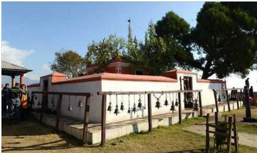
आलमदेवी मन्दिर, स्याङ्जा
पर्खालले घेरिएको छ। कुनै देवीको मूर्तिलाई भन्दा पनि आत्मिक तथा भावनात्मक शक्तिपीठको रूपमा पूजा गरिनु यसको मौलिक विशेषता रहेको छ। देवीको पूजा गर्नाले शत्रुको नास हुने, आरोग्य मिल्ने, ठुलो सङ्कटबाट पार पाउने, मनमा चिताएको इच्छा तथा भाकल पूरा हुने र देवीको भक्त तथा उपासकहरूले युद्धमा विजय प्राप्त गर्ने विश्वास गरिन्छ। किंवदन्तीअनुसार तत्कालीन राज्य उज्जैन हाल भारत राजस्थानमा हिन्दु धर्मावलम्बी वंशको शासनमाथि मुस्लिमको आक्रमणका कारण राजा भूपालसिंह राव गहलोत कुलदेवीको रक्षार्थ कुलदेवी-वेगमाता-वेगेश्वरीलाई फोलीमा हाली यात्रा गर्ने क्रममा नेपालको रुङक्षेत्रमा केही समय बिताई उत्तरतर्फ जाँदा लसघाँ भन्ने स्थानको पहाडको टाकुरामा वास बस्न पुग्दा उक्त देवीलाई भीमसेनपातीको रुखमा भुन्ड्याई आराम गर्दा फोलीबाट खस्न पुगी जमिनमा भासिन पुगेकी थिइन्। हाल मन्दिर रहेको भीमसेनपातीको फेदबाट एउटा प्वाल पारी कालीगण्डकी पुगी स्नान गरी पुन: भीमसेनपातीको फेदमा आई बसिन्। भीमसेनपातीको रुखबाट अलप भएकाले सोही दिनदेखि वेगमाता वेगेश्वरीलाई सजिलोको रूपमा अलप देवी भन्दाभन्दै आलमदेवी (अपभ्रंश) शब्द बन्न पुग्यो।
यिनै भूपाल सिंह वंशका कुलमण्डन खाँ दिल्लीका मुगल सम्राटद्वारा शाह उपाधि प्राप्त गरी कास्कीको अर्घामा राजा भएका र उनकै वंशजहरू क्रमश: लमजुङ, गोरखा हुँदै पृथ्वीनारायण शाहले नेपाल एकीकरण गरेपछि एकीकृत नेपालको राजसत्ता सम्हालेका थिए। तसर्थ शाहवंशीय राजपरिवार तथा खाँड ठकुरीहरूले यस मन्दिरलाई कुलदेवीको रूपमा मान्दै आएको पाइन्छ।
३६६/नेपाल परिचय
काठमाडौँ उपत्यका
नेपालको मध्यपहाडी क्षेत्रमा चारैतिर पहाडले घेरेको समुद्र सतहदेखि १३३७ मिटर उचाइमा रहेको समथर भूभागमा काठमाडौँ उपत्यका अवस्थित छ। यहाँ समशीतोष्ण हावापानी पाइन्छ। काठमाडौँ नेपालको राजधानी भएकाले यहाँ जनसङ्ख्याको चाप अत्यधिक छ। काठमाडौँलाई मुलुकको राजधानी रहेको स्थानको रूपमा मात्र नभएर प्राचीनकालको इतिहास बोकेको मन्दिरे-मन्दिर र चाडपर्वहरूको बाहुल्य भएको स्थानको रूपमा समेत लिनुपर्दछ।
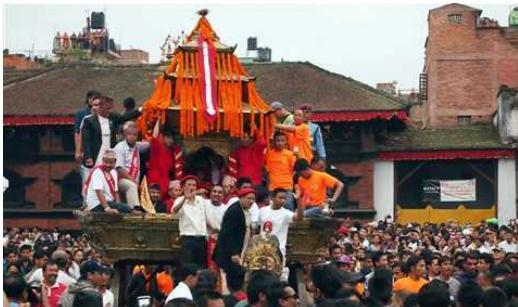
तिब्बतबाट आएका महामञ्जुश्रीले ठुलो तलाउ रहेको स्थानमा वरदा र मोक्षदा भन्ने शक्ति स्थापना गरी चोभार डाँडा काटेर पानी बाहिर पठाई सुन्दर सहरको सिर्जना गरेर काठमाडौँ नगरको निर्माण भएको हो भन्ने किंवदन्ती रहेको छ। यस उपत्यकामा रहेका काठमाडौँ दरबार क्षेत्र, भक्तपुर दरबार क्षेत्र, पाटन दरबार क्षेत्र, स्वयम्भू महाचैत्य, बौद्धनाथ खास्ती, पशुपतिनाथ र चाँगुनारायण मन्दिरसमेतका ख्यातिप्राप्त ऐतिहासिक स्थलहरू विश्वसम्पदा सूचीमा समेत परेका छन्। काठमाडौँ उपत्यकालाई खुला सङ्ग्रहालयको रूपमा नै लिन सकिन्छ। काठमाडौँमा २० कि.मि.को दूरीमा विश्वसम्पदा सूचीमा परेका सातओटा सम्पदा रहेका छन्। यी सम्पदाहरूको उपस्थितिले काठमाडौँ उपत्यकालाई विश्वप्रसिद्ध सहरको रूपमा स्थापित गरेको छ। यी सम्पदाहरूको उचित संरक्षणले यस उपत्यकालाई अनन्तकालसम्म विश्वको एउटा महत्वपूर्ण पर्यटन केन्द्रको रूपमा प्रतिष्ठित बनाइरहने सम्भावना बोकेको देखिन्छ।
भौगोलिक विभाजनअनुसार काठमाडौँ नेपालको करिब-करिब मध्यपहाडी खण्डमा पर्दछ।
नेपाल परिचय/३६७
यहाँका प्रमुख नदीहरू बागमती र विष्णुमती हुन् । पशुपतिनाथ, गुहेश्वरी, स्वयम्भू, बौद्ध, बुढानीलकण्ठ, दक्षिणकाली, हनुमानढोका, गोकर्ण, टेकु, शालिनदी आदि यहाँ अवस्थित प्रमुख तीर्थधाम हुन् । काठमाडौँ राजधानी सहर हुनुका साथै देशको प्राचीन कला, कौशल, संस्कृति, सभ्यता एवम् ऐतिहासिक स्रोतको भण्डार पनि हो । यसका अतिरिक्त देशको प्रमुख शैक्षिक संस्थाहरू, आधुनिक जनशक्ति एवम् उपकरणयुक्त अस्पतालहरू तथा त्रिभुवन अन्तर्राष्ट्रिय विमानस्थलसमेत यसै सहरमा अवस्थित भएको कारणले गर्दा पनि स्वदेशी तथा विदेशीहरूका लागि यो आकर्षणको केन्द्र बन्न पुगेको छ । वरिपरिबाट नगरकोट, नागार्जुन, शिवपुरी, चन्द्रागिरि र फुल्चोकीजस्ता मनोरम पहाडहरूले घेरिएको यस उपत्यकाको सुन्दरतालाई यी पहाडहरूको उपस्थितिले अभै बढाएको छ ।
नेपालका ७७ जिल्लामध्ये काठमाडौँ पनि एउटा हो । सामान्यतया काठमाडौँ, ललितपुर र भक्तपुरसमेतका तीनओटा जिल्ला समेटिएको समतल र वरिपरिबाट पहाडले घेरिएको होचो भागलाई काठमाडौँ उपत्यकाको नामले चिन्ने गरिन्छ । यो उपत्यकाभन्दा बाहिरका मानिसहरूले मूलतः यस उपत्यकालाई नै काठमाडौँको नामले चिन्ने गर्दछन् । नेपालको काठमाडौँ जिल्लामा पनि काठमाडौँ सहर नेपालको राजधानी सहर रहनेछ भनी सँविधानको धारा २८८ मा व्यवस्था गरिएको छ । यस जिल्लाको क्षेत्रफल ३९५ वर्ग कि.मि. छ । ऐतिहासिक दरबार हनुमानढोकाको निजिकमा रहेको काठैकाठले बनेको काष्ठमण्डपको आधारमा काठमाडौँको नाम रहन गएको हो भन्ने विद्वानहरूको भनाइ रहेको छ । ऐतिहासिक भवन सिंहदरबार प्रमुख प्रशासकीय केन्द्र हो । सार्क सचिवालय, काठमाडौँस्थित विभिन्न विदेशी राजदूतावासहरू, नेपाल राष्ट्र बैंक तथा अन्य केन्द्रीय कार्यालयहरू पनि काठमाडौँभित्र नै रहेका छन् । त्यसैले काठमाडौँ नेपालको राजनीतिक राजधानीको रूपमा मात्र नभई वित्तीय, शैक्षिक, न्यायिक, धार्मिक, तथा कूटनीतिक राजधानीको रूपमा समेत रहको छ । वीर अस्पताल तथा टिचिङ हस्पिटल जस्ता देशका ठूला र साधनसम्पन्न अस्पतालहरू पनि रहेका छन् । काठमाडौँलाई त्रिभुवन राजपथ, कोदारी (अरनिको) राजपथ र पृथ्वी राजपथ, बर्दिवास-धुलिखेलजस्ता राजमार्गहरूले बाहिरी क्षेत्रहरूसित जोडेका छन् ।
काठमाडौँबाट भगवान् गौतमबुद्धको जन्मस्थल लुम्बिनी र शुद्धोधनको राजधानी तिलौराकोट कपिलवस्तुको निजिकमा रहेको भैरहवा एवम् देशको महत्वपूर्ण पर्यटन केन्द्र पोखरा र सगरमाथाको काखमा अवस्थित रहेको नाम्चेजस्ता देशका विभिन्न क्षेत्रसित हवाई सम्पर्क रहेको छ । मेचीदेखि महाकालीसम्मका गाउँ तथा सहरहरूमा पुग्न विभिन्न किसिमका यातायातका सेवाहरू पनि नियमित रूपले सञ्चालन भइरहेका छन् । रेडियो तथा टेलिभिजनका केन्द्रीय कार्यालयहरू र स्टेसनहरूका साथसाथै नेपाल दूरसञ्चार संस्थानको केन्द्रीय कार्यालय पनि काठमाडौँमै रहेको र नेपालबाट प्रकाशित आधाभन्दा बढी दैनिक तथा साप्ताहिक समाचार पत्रपत्रिकाहरू पनि काठमाडौँबाट प्रकाशित हुने भएकाले काठमाडौँलाई नेपालको सञ्चारको राजधानी पनि भन्न सकिन्छ । सोल्टी, अन्नपूर्ण, याक
३५८/नेपाल परिचय
एन्ड यती, ह्यातलगायतका तारे होटलहरूसमेत यस महानगरमा रहेका छन् । हडकडबाट प्रकाशित हुने एसियाको प्रसिद्ध आर्थिक पत्रिका ASIA WEEK को सन् १९९८ डिसेम्बर ११ को अड्कमा एसियाका बस्नका निमित्त सबैभन्दा उपयुक्त ४० ओटा प्रमुख सहरहरूमा काठमाडौँको नाम २७औँ स्थानमा रहेको कुरा उल्लेख छ ।
कोदारी
नेपालको भारतसित गरिने व्यापारको मुख्य केन्द्र वीरगन्ज भए जस्तै चीनको स्वशासित क्षेत्र तिब्बतसितको व्यापारको प्रमुख केन्द्रको रूपमा रहेको नेपालको प्रमुख व्यापारिक नाका कोदारी हो । तिब्बतको सीमावर्ती बजार खासाबाट आउने सामान र नेपालबाट खासातिर निर्यात गरिने वस्तुहरूको आयात-निर्यात गर्ने सीमावर्ती व्यापारिक केन्द्र कोदारीलाई नेपालको एउटा प्रमुख राजमार्गको रूपमा रहेको कोदारी (अरनिको) राजमार्गले काठमाडौँसँग जोडेको छ । कोदारी बागमती प्रदेशको सिन्धुपाल्चोक जिल्लाको उत्तरी सीमावर्ती क्षेत्रमा पर्दछ ।
काँकडभिट्टा
यो नेपालको पूर्वी सिमानानजिक रहेको बजार हो । यो कोशी प्रदेशको भापा जिल्लामा पर्दछ । यहाँबाट फूलबारी मार्ग हुँदै बड्गलादेश जाने मार्ग खुलेकाले यसको महत्व बढ्न पुगेको छ । नेपालको पूर्वी सिमानाको महत्वपूर्ण प्रवेश मार्गमा रहेकाले यसलाई पूर्वको ढोका पनि भनिन्छ । यहाँ मेची भन्सार कार्यालय रहेकाले यसले यस क्षेत्रको निकासी पैठारीमा महत्वपूर्ण भूमिका खेलेको देखिन्छ । काँकडभिट्टा मेची नगरपालिकामा पर्दछ ।
पशुपतिनगरद्वारा भारतको खर्साड, सिलीगुडी र दार्जिलिङसँग व्यापारिक सम्पर्क कायम रहेको र चिया उत्पादनका निमित्त नेपालको प्रसिद्ध इलाम जिल्ला र भापा जिल्ला एकअर्कासँग जोडिएको हुनाले काँकडभिट्टा र इलामको बीचमा रहेको दूरी त्यति धेरै नरहेको कुरा स्वत: स्पष्ट हुन्छ ।
ककनी
काठमाडौँको केन्द्रबाट २७ कि.मि. दूरीमा ५,९९७ फिटको उचाइमा ककनी भन्ने रमणीय स्थान छ । नुवाकोट जिल्लामा पर्ने यो ठाउँलाई राणाकालमा वसन्ती बाग भनिन्थ्यो । यसको नजिकै तामाङ जातिको ठुलो बस्ती छ । यसका अतिरिक्त प्रहरी तालिम केन्द्र, तारा गाउँ अतिथि गृह, थाई एयरवेजद्वारा निर्मित स्मृति पार्क, बागवानी फार्मले पनि ककनीको शोभा बढाएका छन् ।
खप्तड
डोटी, अछाम, बभाङ र बाजुरासमेत चार जिल्लामा फैलिएको खप्तड करिब ११,००० फिटको उचाइमा रहेको छ । चारवटै जिल्लाको सड्गमस्थलमा रहेको यो उच्च पहाडी भूभागमा थुम्काथुम्की, चौर (पाटन) र स-साना खोलाहरू छन् । यो उच्च पहाडी मैदानी भूभागको सरदर चौडाइ पाँच किलोमिटर र लम्बाइ सरदर १० किलोमिटर छ । हिउँले ढाकिएका सेता डाँडा र
नेपाल परिचय/३६९
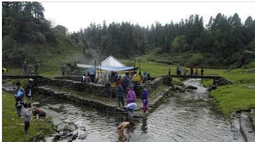
त्रिवेणी मन्दिर, खप्तड
वन-जङ्गल आफैमा मनमोहक देखिन्छन् । हिउँले छोडेपछि रङ्गीबिरङ्गी फूलैफूलको समथर भूभाग स्वर्गभैँ लाग्दछ । खप्तड प्राकृतिक सुन्दरताको पर्यायको रूपमा रहेको छ । खप्तडको पर्यटकीय दृष्टिले विकास गर्न सकेमा पश्चिम नेपालको विकासमा यसबाट महत्वपूर्ण योगदान पुग्नेछ ।
खुम्बु क्षेत्र
कोशी प्रदेशको सोलुखुम्बु जिल्लामा पर्ने खुम्बु क्षेत्र पर्वतारोहण र पदयात्राका लागि प्रसिद्ध छ । यहाँ विश्वको सर्वोच्च शिखर सगरमाथासहित छिटो तथा सरल पर्वतारोहणका लागि प्रसिद्ध ६६६४ मिटर अग्लो मेरा पिक पनि छ । यसबाहेक यहाँ गोक्यो पिक, पिके डाँडा, टासीलाप्चा, कालापत्थर, आमालाप्चा क्रस, दूधकुण्ड आदि दर्शनीय स्थलहरू छन् ।
गोरखा
गोरखा पृथ्वीनारायण शाहले नेपाल एकीकरण अभियान आरम्भ गर्नुपूर्व शाह राजाहरूबाट शासित एक सानो पहाडी राज्य थियो । गोरखाको पूर्वमा धादिड, पश्चिममा तन्हुँ, लमजुङ, मनाङ र उत्तरमा चीनको तिब्बत प्रदेश र दक्षिणमा चितवन जिल्ला रहेका छन् । उत्तरपट्टि ग्वाला भञ्ज्याङ र शृङ्गी हिमाल, नारद पोखरी (कुण्ड), दरौंदीको शिर, दक्षिणपट्टि त्रिशूली, पूर्वपट्टि बुढीगण्डकी र पश्चिमपट्टि मर्स्याङ्दी, चेपे चम्पावती तथा मनास्लु शृङ्खला गोरखा जिल्लाका प्राकृतिक सिमाना हुन् । गोरखकालीको दक्षिण पाखोमा अवस्थित गोरखा बजार वा पोखराथोक यस जिल्लाको सदरमुकाम हो । उत्तरबाट दक्षिणतिर बने दरौंदी गोरखा जिल्ला भई बने प्रमुख नदी हो । ऐतिहासिक महत्व र जलशक्तिको दृष्टिकोणले समेत दरौंदी प्रमुख आकर्षणको केन्द्र रहेको छ ।
३७०/नेपाल परिचय
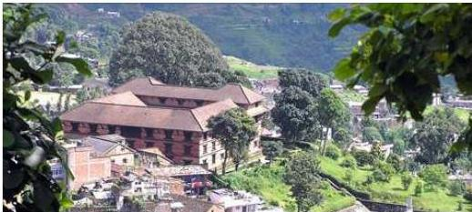
गोरखा दरबार
गोरखा बजार रहेको पहाडको टाकुरामा अवस्थित गोरखा दरबार प्यागोडा शैलीमा बनेको छ र कलात्मक झ्याल, ढोकाहरूबाट सुसज्जित रहेको छ। ऐतिहासिक थलोका रूपमा रहेको गोरखा दरबार पर्यटकीय दृष्टिकोणले पनि अत्यन्तै महत्वपूर्ण छ। दरबार परिसरमा काली मन्दिर र गोरखनाथको मन्दिरका साथसाथै अरू देवीदेवताका मूर्तिहरू पनि यत्रतत्र छरिएर रहेका छन्। गोरखा दरबारका साथसाथै गोरखा बजारमा सुन्दर कलात्मक शैलीमा निर्मित अरू दरबार पनि छन्। नुवाकोट दरबार पनि यसै शैलीमा निर्मित छ। गोरखामा प्राचीन सङ्ग्रहालय रहेको छ। बजार क्षेत्रमा प्रायजसो नेवार समुदायको बसोबास भएको हुनाले यहाँ नेवार सम्प्रदायले मान्ने सम्पूर्ण जात्राहरू गर्ने प्रचलन छ।
यस क्षेत्रबाट हिमालयका सुन्दर दृश्यहरू देखिने भएकाले यो क्षेत्र पर्यटकीय दृष्टिकोणबाट अति आकर्षक छ भने लार्कपास हुँदै मनाङ जाने प्रमुख बाटोको रूपमा पनि प्रख्यात छ। नेपालको उत्तरी जिल्लाहरू जस्तै गोरखा पनि यासांगुम्बाका लागि प्रसिद्ध छ। गोरखा जिल्लामा रहेको मनकामनाको मन्दिर हिन्दुहरूको प्रसिद्ध धार्मिक स्थल मात्र नभएर एउटा मनोरम पर्यटकीय स्थल पनि हो। पृथ्वी राजमार्गमा पनि चेरेसदेखि मनकामनासम्मको यात्रालाई मनकामना केबलकारको सञ्चालनले अत्यन्त सरल, सहज, छोटो र मनोरञ्जक बनाएको छ।
गजुरमुखी देवी
इलाम जिल्लाका चार प्रमुख नदीहरूमध्ये एक देउमाई नदीको पश्चिम किनारमा ओढारजस्तो ठाउँमा विभिन्न आकारका प्रस्तरको देवी मूर्तिहरूलाई गजुरमुखी देवी भनिन्छ। यहाँ लिम्बू जातिको पुजारी हुन्छन्। गजुरमुखी देवीको पूजाअर्चना गर्नाले बोल्न नसक्ने व्यक्ति पनि बोल्न सक्ने, कान नसुन्नेले सुन्न सक्ने हुन्छन् भन्ने जनविश्वास छ। कात्तिक पूर्णिमाका दिन यहाँ मेला लाग्दछ। ओढार आकारको थलोलाई जनसहयोगबाट मन्दिरको रूप दिइएको पाइन्छ। यहाँ शिव मन्दिर र धर्मशाला आदि पनि बनाइएको छ।
नेपाल परिचय/३७१
गहौं कालिका मन्दिर
स्याङ्जा जिल्ला वालिङ नगरपालिकाको गहौंसुरमा अवस्थित गहौं कालिका मन्दिर आजभन्दा ५३० वर्ष पहिले गहौंकोट राज्यका पहिलो राजा दशरथ खाँड (वि.सं. १५१०-१५३६) को २६ वर्षे शासनकालमा स्थापना भएको थियो। यो मन्दिर समुद्री सतहदेखि १५१६ मिटरको उचाइमा गहौंसुर डाँडाको टुप्पामा अवस्थित छ। चैते दसै र बडादसैमा विशेष मेला लाग्ने यस मन्दिरमा दैनिक पूजाआजा चल्दै आएको छ। मन्दिरको दोस्रो पुनर्निर्माण वि.सं. १८४८ मा स्वतन्त्र गहौंकोट राज्यका अन्तिम राजा श्रीभक्त खाँणले गरेका थिए भने तेस्रो पुनर्निर्माण २०५ वर्षपछि वि.सं. २०५३ सालमा स्थानीय व्यक्तिकै पहलबाट भएको पाइन्छ। मन्दिर स्याङ्जा जिल्लाका प्राय: सबैजसो ठाउँबाट स्पष्ट अवलोकन गर्न सकिन्छ।
गृह्येश्वरी मन्दिर
पशुपति मन्दिरको निजिकै बागमती नदीको तटमा अवस्थित धार्मिक, ऐतिहासिक, सांस्कृतिक एवम् कलात्मक दृष्टिले महत्वपूर्ण यो मन्दिर हिन्दु धर्मावलम्बीहरूको आस्थाको केन्द्रका रूपमा रहेको छ। गृह्येश्वरी शक्तिपीठको स्थापना लिच्छविकालमा र मन्दिरको निर्माण मल्लकालमा भएको मानिने हुँदा यहाँ लिच्छविकालीन मूर्तिकला तथा मल्लकालीन काष्ठकलाका विशिष्ट नमुना दृष्टिगोचर हुन्छ। चारैतिर पाटीपौवाहरूले घेरिएको मण्डप शैलीमा श्लेष्मान्तक वनसँगै बागमती नदीको दक्षिण तटमा निर्मित यो भगवान् शिवको सहधर्मिणी सतीदेवी (पार्वती) को मन्दिर भएको मानिन्छ। प्राचीनकालमा आध्यगुरु शङ्कराचार्य यही ठाउँको अवलोकन गर्न आउनुभई गृह्येश्वरीको उपासना र प्रार्थना गर्नुभएको पनि आख्यान छ। तान्त्रिक बज्रयान बौद्ध परम्पराअनुसार गृह्येश्वरीको पूजाअर्चना गरिने हुँदा यो स्थल हिन्दु र बौद्ध दुवै समुदायका लागि पूजनीय मानिन्छ।
धान्द्रक
गण्डकी प्रदेशको कास्की जिल्लाअन्तर्गत अन्नपूर्ण र माछापुछ्ने हिमालको काखमा पोखराबाट ४२ कि.मि. उत्तरमा अवस्थित धान्द्रक गुरुङ संस्कृति र जीवनशैलीलाई जीवन्त रूपमा प्रस्तुत गर्न सक्षम प्रमुख गुरुङ बस्ती हो। यो ठाउँ पर्वतारोही, पदयात्रीका अतिरिक्त स्वदेशी तथा विदेशी पर्यटकहरूका लागि महत्वपूर्ण आकर्षक स्थल मानिन्छ। यहाँ प्रत्येक वर्ष करिब ५० हजार पर्यटकले भ्रमण गर्ने गर्दछन्।
घलेगाउँ
लमजुङ जिल्लास्थित घलेगाउँ ग्रामीण पर्यटन तथा होमस्टेका लागि प्रसिद्ध छ। घलेगाउँबाट मनास्लु, अन्नपूर्ण, माछापुच्छ्रे, लमजुङ हिमाल शिरको टोपीजस्तै देखिन्छन्। चियाबगान, भेडीखर्क, उत्तरकन्याको मन्दिर दर्शनीय छन्। घले गुरुङको आत्मीय आतिथ्य र घाँटु नाचको प्रदर्शनले स्वदेशी र विदेशी पर्यटकलाई मोहित बनाउने गरेको पाइन्छ। घलेगाउँको
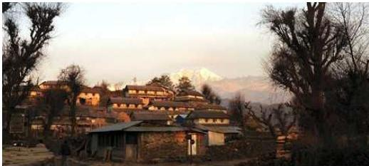
घलेगाउँ, लमजुङ
होमस्टे पार्क मुलुककै उत्कृष्ट मानिन्छ भने यसपछि नेपालका धेरै स्थानमा होमस्टे पर्यटन फस्टाएको छ ।
चन्दननाथ मन्दिर
कर्णाली प्रदेशको जुम्ला जिल्लामा रहेको चन्दननाथको मन्दिरमा भगवान् दत्तात्रेयको मूर्ति स्थापित छ । यहाँ वैदिक विधि विधानअनुसार प्रातः, मध्याह्न र सन्ध्याकालमा गरी दिनको तीनपटक पूजा गरिन्छ । आठौँ शताब्दीअगाडि निर्मित यो मन्दिरमा भगवान् दत्तात्रेयको चरणपादुका रहेको छ । चन्दननाथले स्थापना गरेको मन्दिर भएकाले यस मन्दिरको नाम चन्दननाथ रहेको हो । यहाँ योगी (गिरी, पुरी आदि) समुदायको व्यक्ति पुजारी हुन्छन् ।
चौंगुनारायण
भक्तपुर जिल्लाको पूर्वोत्तर भागमा डोलाद्री (डोलागिरि) नामको अम्लो पहाडको थुम्कोमा अवस्थित भगवान् विष्णुको मूर्ति स्थापित यो मन्दिर नेपालको प्राचीनतम् मन्दिरहरूमध्ये एक मानिन्छ । यो मन्दिरको निर्माण कहिले र कसले गराएको हो भन्ने बारेमा स्पष्ट जानकारी नभए पनि हरिदत्त वर्मा नामका व्यक्तिले सकृ ३८६ ताका संवत् (वि.सं. ५२१) मा उपत्यकाका चार नारायणहरू (चौंगुनारायण, शेषनारायण, विशाङ्खुनारायण र इच्छ्युनारायण)को स्थापना गर्ने क्रममा चौंगुनारायण स्थापना गरेको भन्ने आह्वान छ । सकृ संवत् ३८६ (वि.सं. ५२१) मा राजा मानदेवले पूर्व र पश्चिमका सामन्तहरूलाई नियन्त्रण गरी चौंगुनारायणको पूजाअर्चना गरी गरुङसहितको स्तम्भ खडा गराएको कुरा उल्लेख भएको पाइन्छ ।
चितवन वन्यजन्तु संरक्षण क्षेत्र
वन्यजन्तु संरक्षण क्षेत्रको रूपमा चितवनलाई लिइएको छ । यहाँ दुर्लभ वन्यजन्तु एवम् चराचुरुङ्गी रहेका छन् । एकसिङ्गे गैंडा, बङ्गाली बाघ र हातीलाई स्थलमा पाइने दुर्लभ जनावरहरूका रूपमा लिइएको छ । यो स्थान वन्यजन्तु अध्ययन गर्ने अनुसन्धानकर्ता र वन्यजन्तु अवलोकन गर्ने रुचाउने पर्यटकहरूको मुख्य थलो हुन गएको छ ।
नेपाल परिचय/३७३
छिन्नमस्ता भगवती
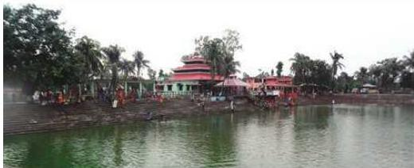
छिन्नमस्ता, सप्तरी
छिन्नमस्ता भगवती सप्तरी जिल्लाको राजविराजबाट दक्षिण सीमावर्ती क्षेत्र सप्तरी जिल्लाको तत्कालीन छिन्नमस्ता गाउँविकास समितिमा पर्दछ। छिन्नमस्ता भवगती मनोकामना पूरा गर्ने शक्तिपीठहरूमध्ये एक पीठ मानिएको हुँदा यस मन्दिरमा नेपाल र भारतका जनताको ठुलो आस्था छ। प्राचीन इतिहास र किंवदन्तीअनुसार कर्नाटवंशी राजा नान्यदेवको पाँचौँ पुस्ताका शक्रसिंहदेव सिम्मैनगढका राजा भएका थिए। उनी नाबालक छोरा हरिसिंहदेवलाई राजगद्दीमा राखी निर्वासित जीवन बिताउन सप्तरी आए। त्यसवेला जड्गलले ढाकिएको यस स्थानमा जड्गल सफा गर्दा भेटिएको भगवती मूर्तिलाई उनले आफ्नो कुलदेवीको रूपमा स्थापना गरी आफ्नो नामबाट देवीको नाम शक्रेश्वरी राखे भन्ने भनाइ छ। देवीको शिर नभएकाले केही समयपछि छिन्नमस्ता भगवती भन्न थालिएको मानिन्छ।
जनकपुर
जनकपुरलाई प्राचीन मिथिला राज्यको राजधानीको रूपमा लिइएको छ। यहाँ रहेका प्राय: सम्पूर्ण मानिसहरू मैथिली भाषा बोल्छन् र यहाँ मैथिली साहित्यको विकास भएको पाइन्छ। जनकपुरमा मैथिली भाषाका कवि विद्यापति कोकिलको सालिक पनि रहेको छ। हिन्दु नारीको आदर्शको रूपमा रहेको सीताको जन्मथलोको रूपमा जनकपुर ख्यातिप्राप्त छ। यस पवित्र स्थलमा विवाह पञ्चमीका दिन नेपाल तथा भारतका हिन्दु धर्मावलम्बीहरू जनकपुरधामको परिक्रमा गर्न आउँछन्। जानकी मन्दिरको दर्शनका लागि ठुलो मेला लाग्ने गर्दछ।
विवाह पञ्चमीमा जानकी मन्दिरमा हिन्दु धर्मावलम्बीहरूको ठुलो भीड लाग्दछ। स्वदेशका मात्र नभई विदेशबाट पनि यहाँ ठुलो सङ्ख्यामा हिन्दु धर्मावलम्बीहरू रामजानकीको दर्शन गर्न आउने र मिथिलाको यात्रापथमा यात्राका साथसाथै प्रदक्षिणा गर्ने गर्दछन्। जनकपुरको जानकी मन्दिर हिन्दुहरूको एउटा प्रख्यात र मुख्य धार्मिक थलोको रूपमा रहेको छ। जानकी मन्दिरका साथसाथै यस क्षेत्रमा अरू विभिन्न पवित्र धार्मिक स्थलहरू छन्। धनुषा सागर र रत्न सागर आदि पवित्र सागरहरूलाई पनि जनकपुरका अमूल्य निधिको रूपमा लिइन्छ।
३७४/नेपाल परिचय
परम ज्ञानी राजा जनकले शासन गरेको मुलुक भएकाले नै यस स्थानको नाम जनकपुर रहेको हो भन्ने कुरामा विद्वानहरू सहमत देखिन्छन् । यस सहमतिले राजा जनकले हिन्दु मात्रकी आराध्यदेवी सीताको यही जनकपुरमा भगवान् रामसित विवाह गरिदिएका हुन् भन्ने कुराको पनि पुष्टि गर्दछ । प्रसिद्ध हिन्दु विद्वान् तथा स्मृतिकार याज्ञवल्क्यसमेतका विद्वान्हरूले राजा जनकको दरबारमा सम्मान पाएको कुराले प्राचीनकालदेखि नै जनकपुरले अध्ययन र अनुसन्धानको केन्द्रको रूपमा समेत आफूलाई चिनाउँदै आएको तथ्य प्रकट हुन आउँछ ।
जानकी मन्दिर
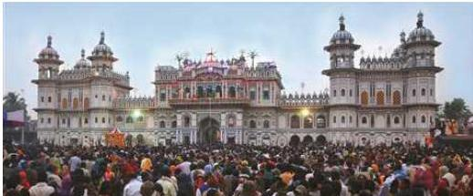
भारतको मध्यप्रदेश राज्यको लोहागढका सुरकिशोर दास हाल जानकी मन्दिर रहेको क्षेत्रमा बस्दा त्यहाँ रामजानकी मूर्ति प्रादुर्भाव भएको देखेकाले सोही ठाउँमा उहाँले छाप्रो बनाई मन्दिरको रूप दिनुभएको थियो । यो मन्दिर अति सुन्दर र भव्य छ । यस मन्दिरलाई नौलखा मन्दिर भन्ने चलन पनि छ । सिङ्गमर्मरको भुइँ तथा आकर्षक गजुरहरूका साथसाथै विवाह मण्डप र सिङ्गमर्मरका देवदेवी तथा ऋषिमुनिहरूका मूर्तिहरूले यस मन्दिरको शोभा बढाएका छन् । यो क्षेत्र मिथिला संस्कृति, भेषभूषा र रहनसहन एवम् चाडपर्वको ज्वलन्त उदाहरणको रूपमा रहेको छ । यो मन्दिरमा नेपाल तथा भारतका दर्शनार्थीहरूको जमघट भइरहन्छ ।
जिरी
दोलखा जिल्लाको दोस्रो महत्वपूर्ण बजार जिरी करिब ६ हजार फिटको उचाइमा अवस्थित छ । जिरीलाई नेपालको स्विट्जरल्यान्ड भनी चिनिन्छ । पर्यटकीय दृष्टिकोणले जिरीलाई महत्वपूर्ण ग्रामीण सहरको रूपमा लिइन्छ ।
तानसेन र श्रीनगर
मध्यपहाडी भूभागमा अवस्थित पाल्पा जिल्लास्थित तानसेन नेपाल राज्यकै अति रमणीय पर्यटकीय एवम् महत्वपूर्ण व्यापारिक केन्द्र हो । पाल्पा जिल्लाको सदरमुकाम तानसेनमा अत्यन्त रमणीय एवम् मनमोहक दृश्यको अवलोकनसमेत गर्न सकिने भएकाले यसको
नेपाल परिचय/३-७५
महत्त्व बढ्दो छ। अत्यन्त आनन्ददायी हावापानी भएको यस नगरमा मगर तथा नेवार समुदायको बसोबास रहेको पाइन्छ। राणाकालमा तानसेनलाई काठमाडौँपछिको महत्वपूर्ण राजनीतिक तथा प्रशासनिक अखडाको रूपमा स्थापित गरिएको पाइन्छ। ढाकाटोपी तथा कस्बासमेतका धातुका सामग्रीका लागि प्रसिद्ध तानसेन मधेश तथा पहाडबीचको प्रमुख व्यापारिक स्थलसमेत हो। नेपाल एकीकरण हुनुभन्दा अगाडिसम्म पाल्पा एउटा पृथक् र शक्तिशाली राज्यको रूपमा रहेको थियो। श्रीनगर डाँडाको काखमा समुद्री सतहबाट १३७१ मिटर उचाइमा अवस्थित पाल्पा जिल्लाको सदरमुकाम तानसेन प्राकृतिक सुन्दरताले भरिपूर्ण छ। प्राकृतिक कलाकौशलको दृष्टिकोणले समृद्ध तानसेन आधुनिक सभ्यतातर्फ उन्मुख छ। पुरानो समयमा सेनवंशी शासकहरूको राजधानीसमेत रहेको तानसेन सहर ऐतिहासिक खोज र अन्वेषणको प्रतीक्षामा छ।
पाल्पा जिल्लाको शोभा, सौन्दर्य वा मुकुटका रूपमा श्रीनगरलाई लिइन्छ। बतासेडाँडा नामको वृक्षहीन शुष्क कुरूप उच्च थुम्कामा सल्ला आदि विभिन्न किसिमका रुख बिरुवाहरू रोपेर रमणीय उद्यानमा परिणत भएपछि बतासेडाँडा नै श्रीनगर भनी पुन: नामकरण गरिएको हो। यहाँ मन्दिर, बुद्धको मूर्ति र वागबगैँचाहरूसमेत छन्। भन्डै १५०० रोपनी क्षेत्रफलमा फैलिएको श्रीनगर शान्त, सुरम्य जड्गल, अनुकूल र स्वस्थकर हावापानी भएकाले यो बाघ, चितुवा, खरायो, दुम्सी आदि जनावर र कालिज, तित्रा, कोइली प्रजातिका पन्छीहरूको सुरम्य बसोबासको क्षेत्र बनेको छ। वनविहार र वनभोजका लागि प्रख्यात यो ठाउँबाट माछापुच्छ्रे, हिमालचुली, अन्नपूर्ण, काञ्जिरोवा, मनास्लु, गणेश हिमाल आदि हिमालहरूको सुन्दर दृश्यावलोकन गर्न सकिन्छ। यसका अतिरिक्त सूर्योदय, माडी उपत्यका र सफा मौसममा भारतको उत्तरी भाग गोरखपुरसम्मको रेलहरूको रोमाञ्चक अवलोकन गर्न सकिन्छ।
अमरसिंह थापाबाट सन् १८०७ इ. मा निर्मित अमरनारायण मन्दिर, सन् १९२७ मा प्रताप शमशेर ज.ब.रा.बाट निर्मित तानसेन दरबार, खड्ग शमशेरबाट निर्मित शीतलपाटी (गोलघर), ब्रिटिस भारतीय फौजलाई पराजित गरेको स्मृतिमा सन् १८१४ मा उजिरसिंह थापाद्वारा बनाइएको भगवती मन्दिर, पाल्पा जिल्लाको सबैभन्दा पुरानो बौद्ध विहारको रूपमा परिचित आनन्द विहारलगायतका महाचैत्य विहार, महाबोधी विहार, वीरेन्द्र फूलबारी आदि यस सहरका प्रमुख पर्यटकीय महत्वका सम्पदा हुन्। साथै, तानसेन सहरबाट करिब ८ कि.मि. दक्षिणमा रहेको सत्यवती ताल र प्रवास तालमा फुलिरहेका कमलका फूलहरूले तानसेन भ्रमण गर्न पर्यटकहरूलाई बारम्बार लोभ्याइरहन्छ।
तातोपानी
म्याग्दी जिल्लाको पोखरा-मुस्ताङ सडकमा पर्ने तातोपानी र सिन्धुपाल्चोक जिल्लाको कोदारी राजमार्ग चीनको सीमानजिकै रहेको तातोपानी पर्यटकीय दृष्टिले महत्वपूर्ण स्थानको रूपमा रहेका छन्। तातोपानी कुण्डमा नुहाउँदा बाथलगायत छाला र नसाका रोग निको हुने धार्मिक मान्यता छ। यही विश्वासका साथ देशभरका दर्जनौँ तातोपानी कुण्डमा दैनिक हजारौँ मानिस नुहाउन पुर्छन्।
३७५/नेपाल परिचय
तिमाल
काभ्रेपलाञ्चोक जिल्लाको साबिकको कानपुर गा.वि.स.बाट सुरु भई पोखरी नारायणस्थानलगायत बाह्र गाउँ समेट्ने मनोरम तिमालमा मुख्यतया तामाङहरूको बाहुल्य रहेको छ। यस क्षेत्रमा ब्राह्मण, क्षेत्री, नेवार, मगर, दलित, ठकुरी, दनुवार जस्ता जातीहरूको समेत बसोबास रहेको छ। जातीय हिसाबले समेत विविधता रहेको यस क्षेत्र धार्मिक हिसाबले समेत प्रख्यात छ। ऐतिहासिक एवम् प्राकृतिक सुन्दरताले भरिपूर्ण शान्त ठाउँको काखमा गुरु रेम्पोले तपस्या गरेको ठाउँलाई हाल गेलुङ ओडार, अन्य ऐतिहासिक धार्मिक स्थल, भगवान्हरूले तपस्या गरेका ओडार, गुफा, गुम्बा, ककलिङ र नारायणस्थान मन्दिर, दुम्जाको महादेवस्थानलगायत विभिन्न मठमन्दिर यहाँका प्रख्यात धार्मिक एवम् ऐतिहासिक स्थलहरू हुन्।
दीपायल, शैलेश्वरी
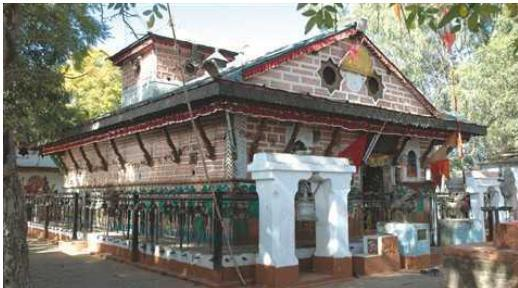
सेती नदीको किनारमा रहेको दीपायल बजारको नजिकै त्यही नदीको अर्को किनारतर्फ रहेको अलिकति अग्लो डाँडा राजपुरमा अधिकांश क्षेत्रीय निर्देशनालयहरू रहेका छन्। राजपुर दीपायल पुरानो डोटी राज्यको राजधानी सहरको रूपमा रहेको थियो भन्ने कुरा ऐतिहासिक तथ्यहरूले औँल्याएको पाइन्छ।
सुदूरपश्चिम प्रदेशको बभ्राड, बाजुरा, डोटी तथा अछाम जिल्लाको साँधमा पर्ने मनोरम पर्यटकीय र प्रसिद्ध धार्मिक स्थल खप्तडसम्म दीपायल सिलगढीबाट पैदल हिँडेर पनि एक दिनमा पुग्न सकिने र खप्तड राष्ट्रिय निकुञ्जमा रहेका दुर्लभ र सुन्दर फूल, जडीबुटी, वन्यजन्तु, ताल र खण्ड-खण्ड परेका रमणीय पाटन (मैदान) हरूको अवलोकन गर्ने अवसर पाइने हुनाले पनि दीपायल-सिलगढीको महत्त्व बढ्न गएको छ।
नेपाल परिचय/२७७
सुदूरपश्चिम प्रदेश डोटी जिल्लाको सिलगढीमा प्रसिद्ध धार्मिक स्थल शैलेश्वरी मन्दिर छ। शैलेश्वरीको उत्पत्तिका सम्बन्धमा स्थानीय बासिन्दाहरूमा प्रचलित एउटा लोकोक्तिअनुसार शिव-पार्वती एक-अर्कामा हाँसखेल गरिरहेको समयमा ब्रह्मा आदि देवताहरू शिव-पार्वतीको खोजी गर्दागर्दै त्यहाँ आइपुगेछन्। त्यसपछि पार्वतीले अदृश्य भई शिलाको रूप लिइछन्। त्यसैले यहाँका स्थानीय बासिन्दाहरू शैलेश्वरीलाई शिलादेवी पनि भन्ने गर्दछन्। यसैबाट शैलेश्वरीको अभ्युदय भएको मानिन्छ। शैलेश्वरी मन्दिरको स्थापना पाँच पाण्डवले गराएको हो भन्ने जनविश्वाससमेत रहेको छ। शैलेश्वरीलाई अर्धनारीश्वरका रूपमा समेत पूजाआजा गरिन्छ। शैलेश्वरीमा कात्तिक पूर्णिमाका दिन ठुलो मेला लाग्दछ। बाह वर्षमा कुम्भ मेला अर्थात् ६ वर्षमा अर्धकुम्भ मेलासमेत लाग्ने गर्दछ। शैलेश्वरीमा पूजाआजाका लागि छिमेकी राष्ट्र भारतबाट समेत दर्शनार्थीहरूको घुइँचो लाग्ने गर्दछ।
दानसाँगु
जुम्ला जिल्लाको सदरमुकाम खलङ्गादेखि पूर्वोत्तर भागमा तिला नदी र जवा नदीको सङ्मस्थललाई दानसाँगु भनिन्छ। यस स्थानमा गोदान, भूमिदान, अन्नदान, स्वर्णदान, रत्नदान, अभयदान आदि विविध दान दिइएकाले यो ठाउँको नाम दानसाँगु रहेको हो। तिज, महाशिवरात्री, नवरात्री, वैशाख पूर्णिमा, गङ्गादशहरा, चण्डीपूर्णिमा, गुरूपूर्णिमामा यहाँ ठुलो मेला लाग्दछ।
दाउन्ने गढी, दाउन्ने देवी
नवलपरासी जिल्लामा चुरे पहाडको काखमा महेन्द्र राजमार्गको बुटवल नारायणगढ खण्डमा दाउन्ने डाँडामा दाउन्ने देवीको स्थान छ। यस ठाउँमा प्राचीनकालमा परशुरामको आश्रम तथा साधनास्थल थियो भन्ने किंवदन्ती छ। नवलपरासी जिल्लाको प्रमुख दुई क्षेत्र नवलपुर र परासीको ठिक बीचमा दाउन्नेगढी पर्दछ। नवलपुर बस्ती नवलसिंहले स्थापना गरेको मानिन्छ भने परशुराम शब्दबाट पराशु, परसो हुँदै परासी बनेको र दुवैको संयुक्त रूपमा नवलपरासी भएको मानिन्छ।
देवघाट
तनहुँ जिल्लाको देवघाट गाउँपालिकाअन्तर्गत पर्ने हिन्दुहरूको पवित्र तीर्थस्थल देवघाटमा सप्तगण्डकी नदीको सङ्गम भएको हुँदा यो ठाउँमा स्नान गर्दा सम्पूर्ण पापबाट मुक्ति पाइने, यहाँ प्राणत्याग गर्दा कैवल्य मुक्ति पाइने कुरा नेपाल महात्म्यमा उल्लेख छ। हरिगङ्गा (कालीगण्डकी) र हरगङ्गा (त्रिशूली) नदीसमेतको सङ्गम भएको सप्तगण्डकीको नदीको तटमा अवस्थित अर्थात् हरिगङ्गा र हरगङ्गा नदीको तटमा अवस्थित भएकाले यसलाई हरिहर क्षेत्र पनि भनिन्छ। कतैकतै यसलाई आदिप्रयागसमेत भनेको पाइन्छ। यो ठाउँमा माघे सङ्क्रान्तिका दिन ठुलो मेला लाग्दछ। धार्मिक दृष्टिले महत्त्वपूर्ण यो ठाउँको व्यवस्थित विकासका लागि तनहुँ, नवलपरासी र चितवन जिल्लाका केही भाग मिलाई देवघाट क्षेत्र विकास समिति गठन गरिएको छ।
३७८/नेपाल परिचय
देवीघाट
नुवाकोट जिल्लाको बड्रारको छेउमा रसुवा जिल्लाको गोसाईकुण्डबाट आउने त्रिशूली नदी र रसुवाको सूर्यकुण्डबाट आउने तादी खोला (सूर्यमती नदी)को सङ्गमस्थलमा देवीघाट तीर्थस्थल रहेको छ। यसै ठाउँमा प्रसिद्ध जाल्पा देवीको मन्दिर छ। यहाँ प्रत्येक वर्ष चैत्र शुक्लपूर्णिमा र हरिबोधिनी एकादशीका दिन ठुलो मेला लाग्दछ।
दक्षिणकाली
काठमाडौँ फर्पिङ क्षेत्रको दक्षिणकालीमा मझोल मुखाकृति भएकी कालिका देवीको मूर्ति छ। रमणीय उद्यान, वनपाखासहितको यो मन्दिरमा मझलबार र शनिबारका दिन ठुलो मेला लाग्दछ। दक्षिणकाली मन्दिर राजधानी काठमाडौँबाट दक्षिण भेगमा करिब १७ किमिको दूरीमा रहेको छ। यो कालीकादेवीको मन्दिर हो। यो मन्दिर प्रताप मल्लद्वारा निर्माण गरिएको हो। यो फर्पिङको मुटुस्थित ऐतिहासिक महत्त्वले भरिपूर्ण मन्दिर हो। चारैतिर हरियाली सजिएको यो मन्दिर दुई नदीको दोभानमा छ। यो मन्दिरमा कालिका देवीको मूर्तिसहित अन्य देवीदेवताको मूर्ति पनि छन्। यहाँ केवल मन्दिर मात्र नभई वनभोजका लागि अत्यन्त रमणीय र मनोरञ्जनात्मक दृष्टिले भरिएको स्थल पनि हो। यस मन्दिरको दर्शन गर्दा आफ्नो मनोकाङ्क्षा पूरा हुने धार्मिक विश्वासको कारणले गर्दा बर्सेनि हजारौँ भक्तजनको जमघट हुने गर्दछ।
धनुषाधाम
त्रेतायुगमा भगवान् रामचन्द्रले सीतासँग स्वयंवरको क्रममा रञ्चभूमिमा शिवधनुष प्रयोग गर्दा टुक्रिएको धनुषको टुक्रा खसेको ठाउँलाई धनुषा भनियो। जनकपुरबाट १४ कि.मि. उत्तरमा अवस्थित धार्मिक महत्त्वको तीर्थस्थल धनुषाधाममा माघ महिनाको प्रत्येक आइतबारका दिन नेपाल र भारतका श्रद्धालुहरुको ठुलो मेला लाग्दछ।
धनकुटा
धनकुटा नगरपालिका कोशी प्रदेशको धनकुटा जिल्लामा पर्दछ। मनमोहक प्राकृतिक दृश्यावली र मनोरम हावापानी भएको हुनाले धनकुटा पर्यटकीय दृष्टिकोणले समेत अत्यन्त महत्त्वपूर्ण स्थान हो। सुनसरी जिल्लाको सबैभन्दा पुरानो र नेपालको एउटा महत्त्वपूर्ण र दर्शनीय सहरको रूपमा रहेको धरानदेखि धनकुटा हुँदै सङ्खुवासभासम्म पुग्ने कोशी राजमार्गले धनकुटाको यात्रालाई सहज बनाएको छ।
धुलिखेल
काठमाडौँदेखि ३० कि.मि. पूर्वमा काभ्रेपलाञ्चोक जिल्लामा पर्ने प्राचीन सहर धुलिखेल नेवार समुदायको परम्परागत प्राचीन बस्तीको रूपमा प्रख्यात छ। यहाँबाट पूर्व केरियोलुङ र पश्चिममा हिमालचुलीका हिमशृङ्खलाको मनोरम दृश्य देख्न सकिन्छ। साथै, यहाँबाट गौरीशङ्कर हिमाल र अन्य पहाडी शृङ्खलाहरू सुनकोशी र रोसी खोलाको सङ्गमको
सुन्दर दृश्य देखिन्छ । यहाँ तिमाल नारायणको मन्दिर छ, जहाँ भगवान् विष्णुको मूर्ति स्थापना गरिएको छ ।
नेपालगन्ज
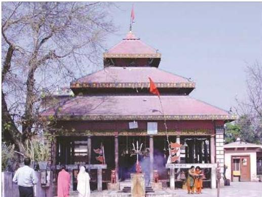
बागेश्वरी मन्दिर, नेपालगन्ज
महेन्द्र राजमार्गमा रहेको कोहलपुर भन्ने स्थानबाट साबिकको मध्यपश्चिम क्षेत्रको ठुलो सहर नेपालगन्ज निजकै रहेको छ । नेपालगन्ज बाँके जिल्लाको सदरमुकाम हो । यो नगर शैक्षिक, औद्योगिक र व्यापारिक केन्द्र पनि हो । नेपालगन्ज समुद्र सतहबाट करिब ६०० फिटको उचाइमा अवस्थित छ । यहाँ उष्ण प्रदेशीय हावापानी पाइन्छ । साबिकका कर्णाली, भेरी र राप्ती अञ्चलनिवासीहरू आफ्नो कृषि, वन तथा घरेलु उत्पादन बिक्री गर्न र आफूलाई चाहिने लताकपडा, नुन, तेल तथा अन्य उपभोग्य वस्तु खरिद गर्न आवतजावत गर्ने हुनाले नेपालगन्ज यस क्षेत्रकै ठुलो र महत्वपूर्ण व्यापारिक केन्द्रको रूपमा दिनानुदिन विकास हुँदै गइरहेको छ ।
धार्मिक दृष्टिकोणबाट पनि नेपालगन्ज महत्वपूर्ण स्थान हो । यहाँको श्री बागेश्वरी मन्दिर प्रसिद्ध छ । यो मन्दिरमा रामनवमी र बडादसैंको नवमीमा ठुलो मेला लाग्दछ । यहाँ रहेका बागेश्वरी पोखरी र रानी तलाउ पनि प्रसिद्ध छन् । नेपालगन्जमा हवाई तथा सडक यातायातको सुविधा छ । यहाँ चामल, काठ, सलाई, कत्था, बिस्कुट आदि निर्माण गर्ने कारखानाहरू सञ्चालित छन् ।
३८०/नेपाल परिचय
नारायणगढ
नारायणगढ नेपालको पूर्व मेचीदेखि पश्चिम महाकालीसम्मका राजधानी काठमाडौँ र मनोरम पर्यटकीय स्थल पोखरा तथा हेटौँडासमेतका विभिन्न स्थानसित सडक यातायातद्वारा जोडिएको नेपालभित्रको आवागमनको प्रमुख केन्द्र हो। यो नेपालको सबभन्दा गहिरो नदी नारायणीको किनारमा अवस्थित छ। प्रसिद्ध धार्मिक स्थल देवघाट पनि नारायणगढ बजारको निजिकै नारायणी नदीको किनारामा रहेको छ। प्रसिद्ध तीर्थस्थल त्रिवेणीको पनि निजिक रहेको यो सहरबाट प्रत्येक दिन अनेकौँ सवारीसाधन देशका विभिन्न भागमा पुग्दछन्। सुदूरपश्चिम प्रदेशको महेन्द्रनगरदेखि काठमाडौँसम्म आउने र कोशी प्रदेशको काँकडभिडादेखि काठमाडौँ र पोखरासम्म आउने सवारीसाधनहरू नारायणगढ भएर ओहोरदोहोर गर्ने भएकाले नारायणगढको व्यापारिक महत्व अत्यन्तै बढ्दै गएको छ। अर्कातिर विश्वसम्पदा सूचीमा समावेश भएको चितवन राष्ट्रिय निकुञ्ज नारायणगढसित जोडिएको छ। नारायणगढबाट सौराहा, कसरा, चण्डी भञ्ज्याङ, टाइगरटप्स जस्ता पर्यटकीय क्षेत्र थोरै मात्र दूरीमा रहेका छन्।
न्यातपोल देबल
राजा भूपतिन्द्र मल्लद्वारा वि.सं. १७५९ मा पाँचतले प्यागोडा शैलीमा निर्मित यो मन्दिरमा देवी लक्ष्मीको मूर्ति स्थापना गरिएको छ। भक्तपुरस्थित यो मन्दिरका विभिन्न तलामा विभिन्न देवीदेवताका मूर्तिहरू छन् भने मन्दिरको प्रवेशद्वारमा योद्धा, हात्ती, सिंह, बाघ, बधिनी र गरुडका मूर्तिहरू रहेका छन्।
नक्साल भगवती
लिच्छविकालमा पलाञ्चोक भगवतीको मूर्ति बनाउनेले नै नक्साल भगवतीको पनि मूर्ति बनाई स्थापना गरेको जनश्रुति छ। रणबहादुर शाहका टक्सारी भीम बर्मा खवासले वि.सं. १८३९ मा पूजा गरी मन्दिरको जीर्णोद्धार गरेको र चिताइएको काम प्रेम गिरी खसाइले गरेको कुरा शिलालेखमा उल्लेख छ।
नगरकोट
काठमाडौँ सहरदेखि ३२ कि.मि.को दूरीमा भक्तपुर जिल्लामा पर्ने ७२०० फिट (२१७५ मि.) को उचाइमा अवस्थित यो ठाउँबाट सूर्योदय र सूर्यास्तको मनोरम दृश्य देखिन्छ। यहाँबाट काठमाडौँ उपत्यकाको मनोरम दृश्यावलोकन, पर्वतीय दृश्यावलोकन हुनुका साथै सगरमाथा, कञ्चनजङ्घा, अन्नपूर्ण आदि हिमशिखरहरूको मनोरम छटा देखिने हुँदा यहाँ पर्यटकहरूको जमघट हुन्छ। भनिन्छ, नगरकोटमा एकै दिनमा चारओटा सिजनको अनुभव गर्न सकिन्छ। साथै, यहाँबाट पश्चिम-उत्तरमा काठमाडौँ र दक्षिणतर्फ भक्तपुर सहरको दृश्य देखिन्छ। यहाँ विभिन्न स्तरका होटल तथा रिसोर्ट छन्।
पशुपतिनाथ
बागमती नदी किनारमा रहेको पशुपतिनाथको मन्दिर हिन्दुहरूको पवित्र मन्दिर हो। यो
नेपाल परिचय/३८१
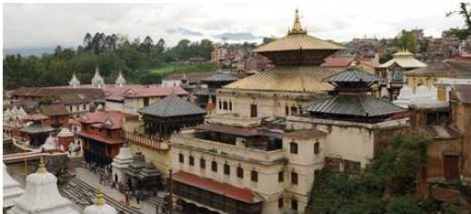
पशुपतिनाथ मन्दिर, काठमाडौँ
शिवजीको अति प्रसिद्ध मन्दिर हो। यो मन्दिर विश्वसम्पदा सूचीमा सूचीकृत गरिएको छ। यहाँ महाशिवरात्रिको पर्व धुमधामले मनाइन्छ। यो हिन्दु वास्तुकलाको उच्चतम नमुना हो। दुईतले यो भव्य मन्दिर तामाको छानालाई सुनको जलप गरिएको छ। शिवको वाहन (नन्दी) को सुनौलो मूर्ति मन्दिरको पश्चिममा राखिएको छ। पशुपतिको किनारमा प्रसिद्ध आर्यघाट छ। पशुपतिको पूर्वपट्टि एक सानो डाँडा छ, जसलाई मृगस्थली भनिन्छ। शिवजीले मृगको रूप धारण गरी क्रीडा गरेको मानिने यो डाँडो निकै आकर्षक पनि छ। उक्त डाँडाको तल बागमतीको किनारमा नै गुह्येश्वरीको मन्दिर छ।
पाथीभरा देवीको मन्दिर
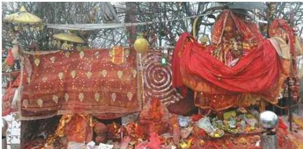
पाथीभरा, ताप्लेजुङ
समुद्री सतहदेखि ३७९४ मिटरको उचाइमा नेपालको पूर्वी पहाडी जिल्ला ताप्लेजुङमा पर्ने यो मन्दिर पाथीभरा पहाडको शिखरमा रहेको छ। पाथीभरालाई देवीको साक्षात् स्वरूप मानेर सुख समृद्धिको कामना गर्दै देवीको दर्शन, पूजा, आराधना गर्ने चलन छ। मनमा
३०२/नेपाल परिचय
पाप भएको मान्छे, गर्भवती महिलाले देवीको दर्शन गरेमा अनिष्ट हुन्छ भन्ने जनविश्वास छ। ताप्लेजुङ जिल्लाको सदरमुकामदेखि १० कोस पूर्वोत्तर भागमा भरिएको पाथी जस्तै चुलिएको पहाडमा देवीको मन्दिर रहेकाले यो मन्दिरको नाम पाथीभरा रहेको हो।
पुगेली माई
कालिकोट जिल्लाको तिलागुफा नगरपालिकामा पुगेली माईको मन्दिर छ, जुन नवदुर्गा भवानीमध्येकी एक बहिनी हुन् भन्ने जनविश्वास छ। श्रावण शुक्ल पूर्णिमाका दिन विभिन्न जिल्लाबाट भक्तजनहरू पूजा आराधनाका लागि आउने गर्दछन्। पुगेली माईको मन्दिरमा पूजा गर्दा मनोकामना पुरा हुने जनविश्वास छ। प्राकृतिक सौन्दर्य, चरण क्षेत्र, पदमार्ग, पुग पाटनमा अवस्थित पुगेली माई क्षेत्र धार्मिक र पर्यटकीय गन्तव्यको रूपमा रहेको छ।
पोखरा
गण्डकी प्रदेशको कास्की जिल्लामा पर्ने पोखरा सहरलाई नेपालको सबैभन्दा महत्वपूर्ण पर्यटन केन्द्रको रूपमा र देशको पर्यटन राजधानीको रूपमा लिने गरिन्छ। फेवा ताल, बेगनास ताल र रूपा ताल जस्ता प्रसिद्ध तालहरू, माछापुच्छ्रे हिमालको दृश्य, विन्ध्यवासिनीको मन्दिर, सहरको बीचबाट साँघुरो र गहिरो भएर बगेको सेती नदी, महेन्द्र गुफा र पातले छाँगो (डेबिड फल्स) आदिलाई पोखराका महत्वपूर्ण दर्शनीय स्थलको रूपमा लिने गरिन्छ।
बढी पानी पर्ने भएकाले पोखरालाई नेपालको चेरापुन्जी पनि भनिन्छ। पोखरालाई सिद्धार्थ राजमार्गले तानसेन तथा बुटवलसित र पृथ्वी राजमार्गले मुग्लिन तथा काठमाडौँसँग जोडेको छ। मुग्लिनबाट नारायणगढ हुँदै नेपालका पश्चिम एवम् पूर्वी तराईका अरू सहरहरूसँगको सडक सम्पर्क पनि कायम भएको छ। कास्की जिल्लाको सदरमुकाम रहेको पोखरा नेपालको प्रसिद्ध पर्यटकीय क्षेत्र भएकाले नेपाल आउने विदेशी पर्यटकहरूले पनि ठुलो प्राथमिकता दिएको पाइन्छ।
फूलचोकी
ललितपुर जिल्लाको सदरमुकामदेखि १० कि.मि. दक्षिणपूर्वमा र काठमाडौँको केन्द्रबाट १५ कि.मि. दूरीमा रहेको फूलचोकी डाँडाको उचाइ २७६५ मिटर रहेको छ। यहाँ सेता, राता रडका गुराँसका फूलहरू ढकमक्क भई फुल्ने हुँदा संस्कृतमा फूलोच्च गिरी भनिएकोमा पछि अपभ्रंश भई फूलचोकी हुन गएको हो भन्ने पाइन्छ। त्रेतायुगमा अनुपम नामको स्थानबाट नागदहलाई धेनेमध्ये एक यो पहाडको टुप्पामा बसी त्यहाँ पाइने एक लाख फूलले भगवान्
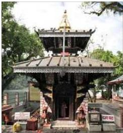
नेपाल परिचय/३८३
स्वयम्भूको पूजाअर्चना गरी फूलैफूलको ठुलो रास बनाएकाले यो ठाउँको नाम फूलोच्च गिरी हुँदै फूलचोकी बन्यो । यसैको छेउमा गोदावरी कुण्ड रहेको, यहाँ १२ वर्षमा गोदावरी मेला लाग्ने गरेको र चारेतिर गोदावरीका फूलहरू फुल्ने गरेकाले फूलचोकौलाई गोदावरीको चुचुरो पनि भनिन्छ । यहाँ करिब ६० लाख मेट्रिकटन डिपोजिट भएको नेपालको सबैभन्दा ठुलो फलाम खानी भएकाले यसको आर्थिक महत्व पनि रहेको छ ।
बौद्धनाथ (खास्ती)
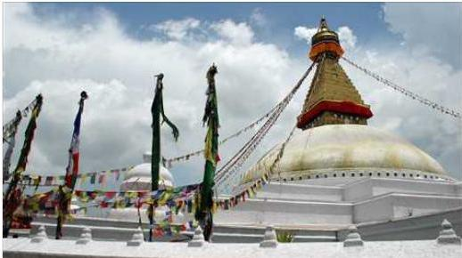
बौद्धनाथ (खास्ती), काठमाडौँ
काठमाडौँ सहरको केन्द्रबाट ७ कि.मि. पूर्वोत्तर भागमा अवस्थित भगवान् बुद्धको ठुलो खास्तीलाई बौद्धनाथ भनिन्छ । पाचौँ शताब्दीमा लिच्छवि राजा मानदेवले निर्माण गरेको यो मठ विश्वका प्राचीन विशालतम स्तूपहरूमध्ये एक मानिन्छ । हिन्दु र बौद्ध धर्मावलम्बी दर्शनार्थी आउने यो मठ धार्मिक सहिष्णुताको प्रतीक मानिन्छ । यसलाई विश्वसम्पदा सूचीमा समेत समावेश गरिएको छ ।
बागलुङ कालिका मन्दिर
बागलुङ जिल्लाको सदरमुकाम बागलुङ बजारदेखि पूर्वमा कालीगण्डकी र काठेखोलाको सङ्गमको उच्च समस्थली (टार) हात्तीसुँडे जङ्गलभित्र कालिका देवीको भव्य सुन्दर मन्दिर छ । पाल्पाका राजा मुकुन्द सेनले आफ्नी छोरीको विवाह तत्कालीन पर्वतका राजा प्रतापनारायण मल्लसँग गरिदिएपछि दाइजोको रूपमा कालिकाको मूर्ति दिएकामा त्यही मूर्ति नै मन्दिरमा स्थापना गरिएको हो भन्ने जनश्रुति छ । मन्दिरमा चैत्राष्टमीका दिन पञ्चबलि चढाई मेला भन्ने चलन छ । हाल बागलुङ बजारलाई कालिका नगरपालिका भनी नयाँ नामकरण गरिएको छ ।
३८४/नेपाल परिचय
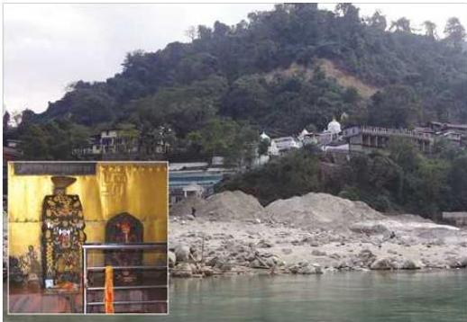
बराह क्षेत्र मन्दिर, सुनसरी
बराह क्षेत्र
बराह क्षेत्र कोशी प्रदेशअन्तर्गतको सुनसरी जिल्लामा कोशी नदी र कोका नदीको पवित्र सड्गममा बराह क्षेत्र नामको मनोरम तीर्थस्थल छ। भारतको कुरुक्षेत्र, नेपालका हरिहर क्षेत्र (देवघाट), मुक्तिक्षेत्र (मुक्तिनाथ मुस्ताङ), रुह क्षेत्र (गुल्मी, पाल्पा र स्याङ्जाको सड्गमस्थल) जस्तै बराह क्षेत्रको पनि विशिष्ट धार्मिक महत्व रहेको छ। बराह क्षेत्रका बारेमा बराह पुराणको ११०औँ र १४०औँ अध्यायमा चर्चा गरिएको छ। यहाँ गणेश बराह, गुरु बराह, सूर्य बराह, कोका बराह, इन्द्र बराह, गायत्री, सरस्वती, नारायणका मूर्ति र मन्दिरहरूका साथै गणेश मन्दिर, लक्ष्मी मन्दिर र धर्मशालाहरू रहेका छन्।
बालाजु, बाइसधारा
काठमाडौँको पश्चिमोत्तर भागमा अवस्थित रमणीय स्थान बालाजु छ। यो उद्यानभित्र भगवान् नारायणको बुढानारायण वा बालनारायणको मूर्ति भएकाले सोही नामले यस ठाउँको नाम राखिएकोमा पछि यो शब्द अपभ्रंश भई बालाजु बन्यो। यसै ठाउँमा प्रताप मल्लले २१ धारा र रणबहादुरले बनाएको सुनको ठुलो धारासहित २२ धारा भएकाले यसको नाम बाइसधारा रहन गएको हो।
बन्दीपुर
तनहुँ जिल्लामा पनि बन्दीपुर धार्मिक तथा प्राकृतिक दृष्टिले रमणीय स्थल मानिन्छ। यहाँ छिम्केश्वरी मन्दिर, खड्गदेवी मन्दिर, गुफा छन् भने बन्दीपुरको मिश्रित ग्रामीण संस्कृति,
नेपाल परिचय/२८५
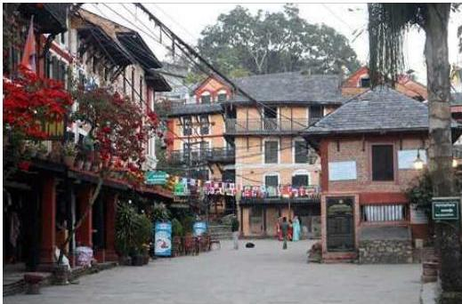
बन्दीपुर, तनहुँ
उत्तरतर्फको मर्स्याङ्दी उपत्यका हिमाली पर्वतशृङ्खला, ससाना पर्वत चुचुराहरू, गणेश हिमाल, माछापुच्छे आदि हिमशृङ्खलाको मनोरम दृश्यालोकन यहाँबाट गर्न सकिन्छ। बन्दीपुरबाट पदयात्रा सुरु गरी देवघाट हुँदै चितवन राष्ट्रिय निकुञ्ज पुगिने हुँदा पनि यसको पर्यटकीय महत्व बढेको छ।
बुढासुब्बा
सुनसरी जिल्लाको धरान बजारबाट पूर्वतिर धमिराले माटो माथि उठाई मूर्तिजस्तै बनेको स्थानलाई बुढासुब्बाको स्थान भनिन्छ। मन्दिरका पुजारी मगर जातिका छन्। बुढासुब्बा राई वा मगर जातिका सिद्ध पुरुष थिए, जो गुलेलीले सिकार गरी हिँड्दथे। सिकार खेल्ने क्रममा हिँड्दै जाँदा यस ठाउँमा आई गुलेलीलाई भुईमा गाडेर मद्याङ्ग्रालाई भुईमा राखी समाधिस्थ भए भन्ने किंवदन्ती छ। त्यहाँको बाँसको भण्ड बुढासुब्बाले गाडेको गुलेलीबाट उभेको र गुलेलीको टुप्पो नहुने हुँदा यहाँको बाँसको पनि टुप्पो नभएको भन्ने जनविश्वास छ। कसैलाई पेट दुखेमा सिकारी (बुढासुब्बा) लागेको भनिने र मद्याङ्ग्रा घोटेर खुवाएमा निको हुन्छ भन्ने जनविश्वास छ। वैशाख पूर्णिमाका दिन ठुलो मेला लाग्ने यो स्थानमा सुँगुर र बोकाको बलि दिइन्छ।
बुढानीलकण्ठ
काठमाडौँ सहरदेखि ११ कि.मि. पश्चिम उत्तरमा शिवपुरी डाँडाको काखमा एउटा सानो पोखरीको बीच शेषशायी भगवान् नारायणको प्रस्तर मूर्ति छ। यसको निर्माण
३०५/नेपाल परिचय
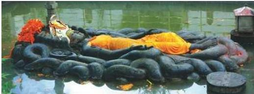
बुढानीलकण्ठ, काठमाडौँ
लिच्छविकालमा पाँचौँ शताब्दीको मध्यतिर भएकाले यसले लिच्छविकालीन मूर्तिकलाको प्रतिनिधित्व गर्दछ ।
राम मन्दिर
जनकपुरधाममा जानकी मन्दिरपछिको अर्को महत्वपूर्ण मन्दिर राम मन्दिर हो । सरदार अमरसिंह थापाले वि.सं. १८३९ मा प्यागोडा शैलीमा जानकी मन्दिरनजिकै राम, सीता, लक्ष्मणसहितको विशाल राम मन्दिर बनाएका थिए । मन्दिरमाथि पितलमा सुनको जलप लगाएको विशाल गजुर श्री ३ चन्द्रशमशेरले चढाएका थिए । मन्दिर परिसरमा हनुमान मन्दिर, शिव मन्दिर, भगवान् विष्णु तथा दशावतारका मूर्तिहरूसमेत छन् । यहाँ रामनवमीका दिन पूजाअर्चना गर्नुका साथै ठुलो मेलासमेत लाग्दछ ।
बडीमालिका
बाजुरा जिल्लामा समुद्री सतहदेखि करिब १५,००० फिटको उचाइमा अवस्थित बडीमालिकाको मन्दिरमा भाद्र शुक्ल पक्षको दिनमा ठुलो मेला लाग्दछ । यहाँ अछाम, डोटी, बभ्राडलगायत देशका विभिन्न भागबाट दर्शनार्थीहरू आउने गर्दछन् ।
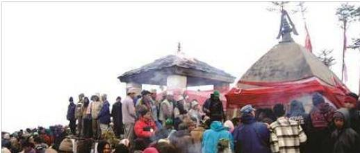
बडीमालिका मन्दिर, बाजुरा
नेपाल परिचय/३८७
बड्गलामुखी मन्दिर
काठमाडौँ उपत्यकाका विभिन्न धार्मिक स्थलहरूमध्ये ललितपुर कुम्भेश्वरस्थित बड्गलामुखी मन्दिर पनि महत्त्वपूर्ण मानिन्छ । नेवार जातिका कपाली समुदायका मानिसहरू यहाँका पुजारी हुन्छन् ।
ब्याउली, धर्मशाला
कर्णाली प्रदेश दैलेख जिल्ला भैरवी गाउँपालिका वडा नं. ७ को उत्तरतर्फ समुद्री सतहबाट करिब ३५०० मिटरको उचाइमा रहेको ब्याउली धर्मशाला ऐतिहासिक र धार्मिक दृष्टिकोणले महत्त्वपूर्ण मानिन्छ । दुईदुःशाबाट निर्मित यो धर्मशाला पाण्डवहरूको वनवासको समयमा एक रातको वासको निमित्त बनाएको भन्ने किंवदन्ती रहेको छ । पौराणिक, ऐतिहासिक, धार्मिक तथा पर्यटकीय दृष्टिकोणले महत्त्वपूर्ण मानिने यो धर्मशाला चौकुने आकारमा निर्माण गरिएको छ । स्वच्छ, सफा, एकान्त, हरियाली एवम् रमणीय स्थानमा रहेको धर्मशालाको आसपासमा, जड्गली जनावरहरू, जडीबुटी र मनोरम हिमाली दृश्यहरू हेरी मनलाई आनन्दित पार्न सकिन्छ ।
भैरहवा
भैरहवा रूपन्देही जिल्लाको सदरमुकाम हो । यो नगर सुनैली भन्ने स्थानमा भारतसँग जोडिएको छ । यस क्षेत्रको महत्त्वपूर्ण व्यापारिक नाकासमेत भएकाले यसको महत्त्व निकै बढेको छ । पश्चिमी क्षेत्रको निकासी पैठारी यही स्थानबाट भारततर्फ हुने गर्दछ ।
भैरहवालाई सिद्धार्थ राजमार्गले पोखरासित जोडेको छ । यो सहर भगवान् गौतमबुद्धको जन्मस्थान लुम्बिनीबाट नजिक रहेको छ । भैरहवामा गौतमबुद्ध विमानस्थल रहेको छ । बुद्धको मावली गाउँ रामग्राम पनि भैरहवाबाट नजिकै पर्दछ । भैरहवालाई सिद्धार्थनगर नगरपालिका नामकरण गरिएको छ ।
भद्रकाली देवीको मन्दिर
काठमाडौँ सहरको बीच भागमा सिंहदरबारको अगाडि प्रख्यात शक्तिपीठ भद्रकाली देवीको मन्दिर रहेको छ । इसाको सातौँ शताब्दीतिर तान्त्रिक बज्राचार्य शाश्वत बज्रले वैष्णवी पीठमा कालिका देवीको साधना गरी देवीको स्थापना गरेपछि यस स्थानलाई भद्रकाली स्थान भन्न थालियो । नेवारी भाषामा यसलाई लुम्डी भनिन्छ । भाषा वंशावलीमा उल्लेख भएअनुसार राजा गुणकामदेवले काठमाडौँ सहरको निर्माण गरेपछि यसको सुरक्षाका लागि सहरको पूर्वी दिशामा भद्रकाली पीठको स्थापना गरेका थिए । भद्रकाली स्थानमा विजया दशमी (बडादसैँ) को दिन ठुलो मेला लाग्ने गर्दछ ।
मुक्तिनाथ
मुस्ताङ जिल्लाको हिमाली भूभागमा मुक्तिनाथको मन्दिर छ । मुक्तिनाथ २८° २४’ आश्रांश र ८३° ३०’ देशान्तरमा अवस्थित छ । प्राय: वर्षभरि चिसो हावापानी वहने मुक्तिनाथ क्षेत्रलाई
३५५/नेपाल परिचय
जाडो याममा हिउँले ढाक्ने गर्दछ । मुक्तिनाथ हिन्दु तथा बौद्धमार्गीहरूको पवित्र धार्मिक स्थलको रूपमा रहेको छ । बर्सेनि असङ्ख्य भक्तजनहरू टाढाटाढाबाट मुक्तिनाथको दर्शन गर्न आउँछन् । भारतका कुनाकुनाबाट पनि हिन्दु धर्मावलम्बीहरू मुक्तिनाथको दर्शन गर्न आउने हुनाले मुक्तिनाथ नेपालको मात्र नभएर सम्पूर्ण हिन्दुहरूको तीर्थस्थलको रूपमा स्थापित भएको पाइन्छ । प्राकृतिक रमणीयताको कारणले पनि बर्सेनि ठुलो सङ्ख्यामा पदयात्रीहरू यस क्षेत्रमा आउँछन् । यस क्षेत्रमा तपस्या गरेको खण्डमा मुक्ति प्राप्त गर्न सकिने हुनाले यस क्षेत्रलाई मुक्तिक्षेत्र भनिएको हो भन्ने जनविश्वास रहेको पाइन्छ । अवलोकितेश्वरको मूर्ति तथा वरुण देवताको रूपमा पुजिने हरबखत आगो बलिरहने स्थान र गुम्बा पनि मुक्तिनाथ क्षेत्रको आकर्षणको रूपमा रहेका छन् ।
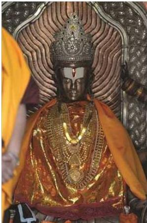
महेन्द्र गुफा
कास्की जिल्लाको पोखरा उपत्यकामा रहेको यो गुफा बाघले गाईवस्तु खान थालेपछि त्यसलाई मान्ने पछ्याउँदै जाने क्रममा वि.सं. २०१२ सालमा पत्ता लागेको हो भन्ने मान्यता रहेको पाइन्छ । वि.सं. २०१६ सालमा राजा महेन्द्रबाट गुफाको संरक्षण गर्न आदेश भएपछि बाघ, स्थाल आदि जड्गली जनावरका वासस्थानका रूपमा रहेको यो गुफालाई महेन्द्र गुफा भनी नामकरण गरियो ।
माईपोखरी
इलाम बजारदेखि १३ कि.मि. उत्तरमा पर्ने पवित्र तीर्थस्थल माईपोखरीमा शिव-पार्वतीले वनविहार र जलक्रीडा गर्ने गरेको भनी स्कन्द पुराणमा वर्णित थलो यही हो भन्ने भनाइ छ । यहाँ स्नान गरेमा पुण्यलाभ हुन्छ भन्ने जनविश्वास छ । यहाँ वि.सं. १९५४ मा स्वामी सोमेश्वरानन्दले निर्माण गराएको शिव मन्दिर पनि छ । यहाँ हरिशयनी एकादशी र
नेपाल परिचय/३८९
हरिबोधिनी एकादशीका दिन ठुलो मेला लाग्दछ । जैविक विविधतायुक्त यस पोखरीलाई रामसार महासन्धिअनुसार रामसार (सिमसार) क्षेत्रका रूपमा सन् २००८ मा घोषणा गरिएको थियो ।
मनकामना देवी मन्दिर
गोरखा जिल्लामा अवस्थित यो मन्दिरमा दुर्गा भवानीको मूर्ति छ । राजा राम शाहकी रानी देवीको शक्ति भएकी नारी थिइन् । रानीको मृत्युपश्चात् उनैको शान्तिको (पूजा गर्न) उपासनाका लागि सिद्ध लखन थापाले नै मनकामना देवीको स्थापना गरी पूजाको चलन चलाएको किंवदन्ती पाइन्छ भने मनकामना मन्दिरमा मगर जातिका पुजारी नै नियुक्त गरिन्छ । पृथ्वी राजमार्गको कुरिनटारदेखि मनकामना मन्दिरसम्म केबलकार सेवा सञ्चालित छ । मनकामनाको दर्शनले मनोकाइक्षा पूरा हुने धार्मिक विश्वास रहिआएको छ ।
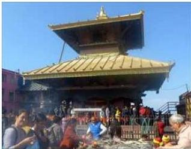
माइबेनी
दुई नदीको सज्जम वेणी, बेनी, दोभान र तीन नदीको सड्गम त्रिवेणीहरू नेपालमा अनेकौँ छन्, जुन धार्मिक दृष्टिले महत्त्वपूर्ण मानिन्छन् । इलाम बजारदेखि ४-५ कि.मि. पूर्वमा माई नदी र जोगमाई नदीको सड्गमलाई माइबेनी भनिन्छ । यो नदीलाई कन्काई नदी भनिन्छ ।
माईस्थान
इलाम बजारको मध्य भागमा रहेको यो स्थानलाई खलजा खाल्डो र मन्दिरअगाडिको ढुवालाई इलड्गा ढुङ्गा भनिन्छ । यो मन्दिरको निर्माण काजी हेमदल थापा (वि.सं. १८७६-१९२२) ले गराई देवीको रूपमा माई नदीको शिला स्थापना गरेका थिए । हाल माईस्थानमा प्यागोडा शैलीको मन्दिर बनेको छ । मन्दिरनजिकै गणेश, डाकिनी र सिंहवाहिनीका स-साना मन्दिर पनि रहेका छन् ।
महेन्द्रनगर
महेन्द्रनगर नेपालको सुदूरपश्चिमी सिमानाको नजिकमा रहेको बजार हो । यो कञ्चनपुर जिल्लाको सदरमुकामसमेत हो । यो क्षेत्र प्रमुख व्यापारिक क्षेत्रका साथै औद्योगिक क्षेत्रसमेत हो । नेपालको सुदूरपश्चिमी क्षेत्रबाट भारतसँग हुने निकासी पैठारी बढी मात्रामा यही क्षेत्रबाट हुने गरेकाले यसको महत्व बढ्न पुगेको छ ।
३९०/नेपाल परिचय
नेपाल र भारतको सिमानाको रूपमा रहेको महाकाली नदीमा निर्मित शारदा तथा टनकपुर बौधहरू महेन्द्रनगरनजिकै रहेका छन् । यसबाट टनकपुर बौधको पूर्वी एप्लक्स बन्डको नजिकै नेपाली भूभागमा रहेको ब्रह्मदेव बजार र शारदा बौधको नजिकै रहेको वनवासा पनि महेन्द्रनगरको नजिक रहेको कुरा स्वतः स्पष्ट हुन्छ ।
रामारोशन
अछाम जिल्लाको उत्तरमा कैलाश खोलाको मुहानमा समुद्री सतहबाट करिब ९००० फिटको उचाइमा रामारोशन नामको धार्मिक दृष्टिले महत्वपूर्ण र पर्यटकीय दृष्टिले सुरम्य स्थान छ । वनजङ्गल, खोलानाला, तालतलैयाहरूद्वारा सुशोभित यो ठाउँमा ‘बाह्र बण्ड अठार खण्ड’ भनिने १२ ओटा ताल र १८ ओटा धुम्काधुम्की छन् । १२ ओटा तालमध्ये ४०० मिटर लम्बाइ र ३०० मिटर चौडाइ भएको ‘जिलिगें ताल’ सबैभन्दा ठुलो मानिन्छ । रामारोशनका वनजङ्गलमा डाँफे, मुनाल, कालिज आदि पन्छीले वास गरेका छन् । रामारोशनभन्दा माथि बडीमालिका देवीको प्राचीन मन्दिर छ । यहाँ श्रावण महिनाको पूर्णिमाका दिन ठुलो मेला लाग्दछ ।
रामग्राम
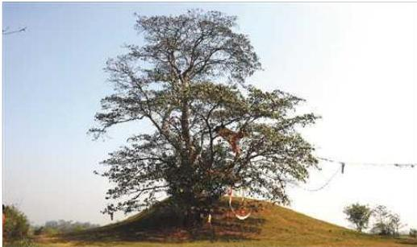
शाक्यमुनि बुद्धको समयताका कपिलवस्तुमा शाक्य र रामग्राममा कोलियहरूले शासन गर्दथे । भराही खोलाको किनारमा अवस्थित ७ मिटर अग्लो रामग्राम स्तूपा ईटाद्वारा निर्माण भएको छ । यो पवित्र स्थान नवलपरासी जिल्लाको सदरमुकाम परासी बजारदेखि ४ कि.मि. दक्षिणपूर्वमा पर्दछ । भगवान् बुद्धको महापरिनिर्वाण भइसकेपछि बुद्धको अस्थि धातुलाई आठ भागमा विभाजित गरियो र त्यतिवेलाको प्रमुख राष्ट्रहरू (१) मगध, (२)
नेपाल परिचय/३९१
वैशाली (३) कपिलवस्तु, (४) अल्लकप्पा, (५) कोलियनगर, (६) बधद्वीपा, (७) पाभ र (८) कुशीनगरलाई एक-एक भाग जिम्मा दिइयो, जहाँ पवित्र स्तूपहरू बनाइए । इ.पू. तीन शताब्दी पहिलेको राजा अशोकले कोलियनगरबाहेक अरू सबै देशका स्तूपहरू उत्खनन गरेर हेरे तर कोलियनगर अथवा रामग्राम स्तूपको उत्खनन् गरेको छैन । यसैले बौद्ध धर्मावलम्बीहरूको आस्थाको केन्द्र रामग्राम स्तूपको अभ्र बढी धार्मिक र पुरातात्विक महत्व छ ।
रानीमहल
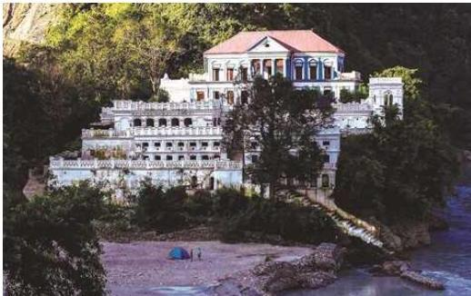
रानीमहल, पाल्पा
पाल्पा जिल्लाको तानसेन नगरपालिका-१३ स्थित पाल्पा र स्याङ्जा जिल्लाको सिमाना रानीघाटमा कालिगण्डकी नदी किनारमा रानीमहल रहेको छ । श्री ३ वीर शमशेरका पालामा सर्वोच्च सैनिक कमान्डर तथा श्री ३ रोलक्रममा रहेका खड्ग शमशेरले आफूविरुद्ध षड्यन्त्र गर्न लागेको आरोपमा काठमाडौँ निकाला गरेपछि खड्ग शमशेर पाल्पामा गई पाल्पालाई काठमाडौँ जस्तै सुन्दर र विकसित बनाउन प्रयत्न गरेका थिए । यसै क्रममा खड्ग शमशेरकी रानी तेजकुमारीले आफ्ना नाममा ताजमहल स्थापना गर्ने इच्छा गरेको र तिनको असामयिक निधनपछि भावविह्वल बनेका खड्ग शमशेरले स्वर्गीय पत्नी तेजकुमारीको स्मृतिमा उनकै समाधिस्थल रानीघाटमा एक विशाल तथा कलात्मक दरबार रानीमहलको निर्माण गरेका थिए । वि.सं. १९४९ मा बेलायती इन्जिनियर र प्राविधिकहरूको संलग्नतामा निर्माणकार्य सुरु भएको यो दरबार वि.सं. १९५४ मा सम्पन्न भएको थियो । यस दरबारलाई हाल रानीमहल तथा नेपालको ताजमहलका नामले चिनिन्छ । खड्ग शमशेरले आफ्नी रानीको
३९२/नेपाल परिचय
सम्भना र समर्पणमा निर्माण गरेको भएकाले यस दरबारलाई प्रेमको प्रतीकका रूपमा समेत मान्ने गरिन्छ । प्रेम गर्ने जोडीहरू जीवनकालमा कम्तीमा एक पटक भए पनि रानीमहल पुगेमा आफ्नो प्रेम अमर रहने विश्वास गरिन्छ । हरियाली तथा स्वच्छ वातावरण एवम् शान्त कालिगण्डकी नदीको समीपमा रहेको यस रानीमहल अवलोकन तथा मनोरञ्जनका लागि स्वदेशी तथा विदेशी गरी दैनिक ३०० को हाराहारीमा पुग्ने गरेको पाइन्छ ।
रसुवा गढी
रसुवा जिल्लाअन्तर्गत नेपाल र चीनको स्वशासित क्षेत्र तिब्बतको सीमा क्षेत्रमा समुद्री सतहदेखि करिब ६००० फिटको उचाइमा अवस्थित यो गढीको निर्माण नेपाल-चीन युद्धको वेलामा नेपालीहरूले बनाएका थिए । ऐतिहासिक, पर्यटकीय आर्थिक महत्वको यो गढी काठमाडौंबाट सबैभन्दा नजिक पर्ने तिब्बततर्फको व्यापारिक नाका हो । यहाँबाट तिब्बततर्फको केरुङ बजार जान सकिन्छ ।
रुरु क्षेत्र वा रुरु तीर्थ
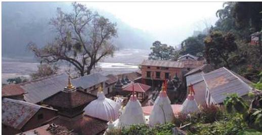
रुरु क्षेत्र, पाल्पा
गुल्मी, पाल्पा र स्याङ्जा जिल्लाको सिमानामा रुरु गड्गा र कालीगण्डकी नदीको तटमा अवस्थित विभिन्न देवीदेवताहरूको मन्दिर रहेको पवित्र तीर्थस्थल तथा रमणीय जड्गललाई रुरु क्षेत्र भनिन्छ । यस ठाउँमा एक अनाथ बालिकालाई रुरु नामकी हरिणीले दूधपान गराई हुर्काएकी रुरुकन्याले ठुलो तपस्या गरी यहाँको भूमिलाई पवित्र तपोमय बनाएकाले यसलाई रुरु क्षेत्र भनिएको हो भन्ने जनधारणा पाइन्छ । यहाँ माघे सड्कान्तिमा ठुलो मेला लाग्दछ ।
रेसुङ्गा
गुल्मी जिल्लाको रेसुङ्गा नामको पर्वतको शिखरमा समुद्री सतहबाट ७,६८२ फिटको
नेपाल परिचय/३९३
उचाइमा अवस्थित हिन्दुहरुको पवित्र तीर्थस्थल रेसुङ्गा रहेको छ । यहाँ कश्यप ऋषिका नाति विभाण्डक ऋषिका छोरा सिद्ध तपस्वी शृङ्गी ऋषिले तपस्या गरेकाले उनको स्मृतिमा यो ठाउँमा शृङ्गी वा शृङ्गा राखिएकोमा यो शब्द अपभ्रंश भई रेसुङ्गा नाम रहेको हो । यहाँ भूगु, पुलस्य, पुलह ऋषिहरुका साथै तपस्वी लक्ष्मीनारायण, स्वामी शाशिधर, रेसुङ्गा महाप्रभु (यदुकानन्द), पारसानन्दले तपस्या गरी सिद्धि प्राप्त गरेकाले यहाँ उनीहरुका मूर्ति र मन्दिरहरु छन् । रेसुङ्गा महाप्रभुले नै जुद्धशमशेरलाई राजपाट त्यागेर वानप्रस्थी हुन प्रेरित गर्नुभएको थियो । रेसुङ्गा महाप्रभुको निधन वि.सं. २०२८ सालमा भएको थियो । रेसुङ्गाको शिखर र त्यसको वरिपरिको क्षेत्रलाई विष्णुपादुका भनिन्छ । यहाँ पटक-पटक दुला-दुला यज्ञयज्ञादि हुँदै आएका छन् । हाल यो ठाउँलाई रमणीय निकुञ्ज र तपोवनका रूपमा विकास गर्ने लक्ष्य राखिएको छ । यहाँ भजन मण्डप, स्नान पोखरी, सन्तहरुको सभा, धर्मशाला आदि बनेका छन् ।
ल्हो मान्थाङ (मुस्ताङ)
! 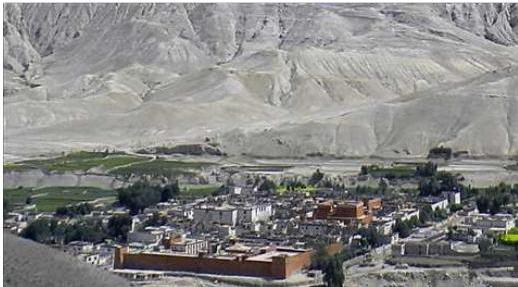
ल्हो मान्थाङ, मुस्ताङ
मुस्ताङ जिल्लाको सदरमुकाम जोमसोमदेखि १०५ कि.मि. उत्तरमा समुद्री सतहदेखि करिब १२,००० फिटको उचाइमा अवस्थित ४०० घर र ९०० जनसङ्ख्या रहेको ल्हो गाउँ ग्रामीण पर्यटनका लागि महत्वपूर्ण मानिन्छ । किल्ला वा पर्खालभित्रको सहर भनी चिनिएको ल्हो मान्थाङ चारैतिर स-साना सुक्खा डाँडाहरुले घेरिएको उब्जाउयोग्य समथर भूमि हो । पन्ध्रौँ शताब्दीतिर स्थापित यो बस्ती प्राचीन ल्हो राज्यको राजधानी पनि हो । ल्हो मान्थाङको आकर्षण पुरानो दरबार र पुराना तीनओटा गुम्बाहरु नै हुन् । सन् १३८७ मा राजा अमेपालले स्थापना गरेको अति प्राचीन भ्रम्पा गुम्बाका भित्ताहरुमा चित्र र अक्षरहरु स्वर्णाक्षरद्वारा अङ्कित गरिएकाले अति आकर्षक र महत्वपूर्ण मानिन्छ ।
३९४/नेपाल परिचय
लुम्बिनी
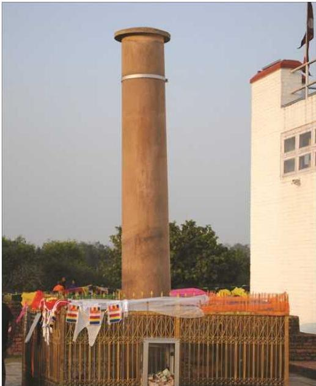
अशोकस्तम्भ, लुम्बिनी
लुम्बिनी भगवान् गौतम बुद्धको जन्मस्थलको रूपमा विश्वभर प्रख्यात छ। लुम्बिनी नेपाल मात्र होइन, विश्वकै लागि पवित्र तीर्थ धाम हो। गौतम बुद्धको जन्म र मृत्यु कहिले भयो भनी यकिनसाथ भन्न नसकिए पनि धेरैजसो इतिहासकारहरू उनको जीवनकाल ५६३ इसापूर्वदेखि ४८३ इसापूर्व रहेको भन्ने कुरामा एकमत देखिन्छन्। प्रख्यात चिनियाँ धार्मिक यात्री हुयान साङ र फाइह्यानले पनि बुद्ध जन्मस्थल लुम्बिनीमा अत्यन्त सुन्दर
नेपाल परिचय/३९५
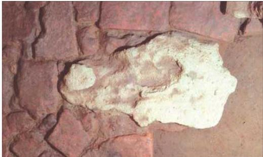
मार्कर स्टोन
मन्दिरहरू देखेको यस पवित्र भूमिलाई पृथ्वीको स्वर्गको रूपमा लिन सकिने भनेर वर्णन गरेका थिए भन्ने उल्लेख गरेको पाइन्छ । सन् १८९६ मा गरिएको पुरातात्विक अन्वेषणका क्रममा मौर्य सम्राट अशोकद्वारा राखिएको अशोक स्तम्भ र त्यसमा रहेको अभिलेख पहिलो पटक प्राप्त हुन आएको थियो । राणा प्रधानमन्त्री वीर शमशेरका भाइ खड्ग शमशेरले गराएको लुम्बिनीको उत्खननबाट लुम्बिनी बुद्धको जन्मस्थल हो भन्ने तथ्य प्रमाणित भएपछि विश्वभर गौतम बुद्धको जन्मस्थल लुम्बिनी प्रदेशको रूपन्देही जिल्लामा पर्ने स्थापित भयो । खड्ग शमशेरले आफैँ बसेर उत्खनन गराइरहेको समयमा सो ठाउँमा पुगेका भारतीय पुरातत्त्व सर्वेक्षण विभागअन्तर्गतका एक पुरातत्त्वविद् कर्मचारी जर्मन नागरिक डा. फुहररले उक्त स्थानमा कुन्दिएको अभिलेखको फोटो खिचेर त्यसको उतार लिएका थिए र भारतमा फर्केर आफ्नो प्रतिवेदन प्रकाशित गराएका थिए । लुम्बिनीमा रहेको अशोक स्तम्भको कारणले बुद्धको जन्मस्थल यकिन गर्न मद्दत पुगेको देखिन्छ । सम्राट अशोक आफ्नो गद्दी आरोहणको २०औँ वार्षिकोत्सव मनाउन लुम्बिनी आएका थिए र लुम्बिनीमा अशोक स्तम्भ खडा गरेका थिए । अशोक स्तम्भमा ब्राह्मी लिपीमा अभिलेख कुन्दिएका छन् ।
बुद्धको जन्मस्थानका चारैतिर त्यसवेलाका पुरातात्विक महत्त्वका भग्नावशेष तथा मण्डलहरू यत्रतत्र छरिएका छन् । लुम्बिनीमा रहेको मायादेवीको मन्दिरमा मायादेवीले रुखको हाँगा समाती बुद्धलाई जन्म दिएको र जन्मनासाथ सात पाइला हिंडेको दृश्य अङ्कित मूर्ति रहेको छ । बुद्ध जन्मेर पाइला टेक्नुअगाडि नै कमलको फूल उत्पत्ति भएको धारणा रहेको पाइन्छ । लुम्बिनी विकास कोष र जापानका विशेषज्ञद्वारा संयुक्त रूपले मायादेवी मन्दिर रहेको स्थानमा उत्खनन कार्य गरियो । त्यसक्रममा बुद्धको जन्म भएको ठाउँको चिनोको
३९६/नेपाल परिचय
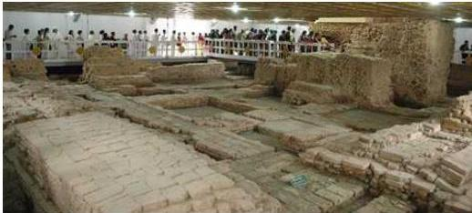
मायादेवी मन्दिर भित्रको दृश्य, लुम्बिनी
रूपमा सम्राट अशोकले राखिएको शिला (मार्कर स्टोन) प्राप्त भएको र मायादेवीको शयन मुद्राको फोटोको साथमा राहुल र सिद्धार्थ गौतमको चित्रसमेत रहेको टेराकोटाको मूर्ति पाइएको यथार्थले लुम्बिनीलाई बुद्धको जन्मस्थल हो भन्ने कुराको निर्कार्यल गर्न पर्याप्त प्रमाण प्राप्त भएको छ। बुद्ध जन्मस्थलको चिनोको रूपमा प्राप्त प्रस्तर र त्यस परिसरका पुरातात्विक क्षेत्रहरूलाई संरक्षण गर्न यथास्थितिमा संरक्षित गरी सुन्दर मायादेवी मन्दिरको निर्माण गरिएको छ। भविष्यमा यस स्थानमा अनुसन्धानकर्ताहरूलाई पुरातात्विक अध्ययन गर्न मद्दत पुग्न जाने देखिन्छ।
बुद्धको जन्मस्थलको निजकै रहेको अत्यन्त रमणीय पोखरीलाई पुष्करिणी भनेर चिनिन्छ। बुद्धलाई जन्म दिनुभन्दा अगाडि मायादेवीले यस पोखरीमा पवित्र स्नान गरेको बताइन्छ। लुम्बिनीको २७ किलोमिटर पश्चिम कपिलवस्तुमा विभिन्न पुरातात्विक वस्तुहरू रहेका छन्। कपिलवस्तु नै राजा शुद्धोधनको राज्यको रूपमा रहेको र सो राज्यको राजधानी तिलौराकोटमा राजा शुद्धोधनको दरबार रहेको कुरा ऐतिहासिक तथ्यहरूले पुष्टि गरेका छन्। तिरौलाकोटमा असङ्ख्य पुरातात्विक भन्नावशेषहरू रहेका छन्। चतरादेव भन्ने स्थानमा भूषणकालीन भाँडाकुँडाहरू प्राप्त भएका छन्। यसबाट त्यस स्थानमा पौराणिक सहरको अस्तित्व रहेको स्पष्ट हुन्छ। गोटिश्वरमा अशोक स्तम्भको प्रतिमूर्तिको रूपमा स्तम्भ निर्माण भएको पाइन्छ। हाल उक्त स्तम्भ खण्डित रूपमा रहेको छ।
यसबाहेक पुरातात्विक क्षेत्रहरूमा निम्नलिखित पनि पर्दछ। यहाँ मयूर आकृति र देवनागरी लिपिमा “ओम मणि पद्मे हुम दिपु मलइ चीरन दयुत १२३४” भन्ने उल्लेख भएको अशोक स्तम्भले पनि ऐतिहासिक महत्त्वलाई प्रतिबिम्बित गरेको छ।
संयुक्त राष्ट्रसङ्घका पूर्वमहासचिव उथान्त नेपाल भ्रमणको अवसरमा लुम्बिनी गएका थिए। उनले सो अवसरमा लुम्बिनी अन्तर्राष्ट्रिय बौद्ध संस्कृतिको केन्द्रको रूपमा विकास हुनुपर्छ भन्ने धारणा व्यक्त गरेका छन्। सोहीअनुरूप जापानका प्रख्यात वास्तुकलाविद् केन्जो टाँगेले लुम्बिनी विकासका निमित्त गुरुयोजनाको परिकल्पना गरे।
नेपाल परिचय/३९७
सोही गुरुयोजनाअनुसार लुम्बिनी हाल अन्तर्राष्ट्रिय पर्यटन केन्द्रको रूपमा विकसित हुँदै छ। यस गुरुयोजनामा लुम्बिनी ग्राम, धार्मिक स्थल र पवित्र बगैँचाको परिकल्पना छ। लुम्बिनीको विकासका लागि लुम्बिनी विकास कोषको स्थापना र सञ्चालन भएको छ। लुम्बिनीमा विभिन्न देशहरूले आ-आफ्नै शैलीमा बौद्ध स्तूपहरू बनाउने अभ्यास पनि भएको देखिन्छ। लुम्बिनी विकास कोषअन्तर्गत लुम्बिनी विकासको गुरुयोजनाअनुसार क्रमशः विकास भइरहेको छ।
लुम्बिनीको अशोक स्तम्भ र मायादेवी मन्दिर रहेको स्थानलाई पवित्र बगैँचा एवम् पवित्र धार्मिक स्थलको रूपमा विकास गरिएको छ। गुरुयोजनामा उल्लेख भएको बौद्धमय मन्दिरको क्षेत्रमा विश्वका बौद्ध धर्मका अनुयायी देशहरूबाट आ-आफ्नै देशका वास्तुकलाले भरिपूर्ण विहार, मन्दिर तथा स्तूपहरूको निर्माण भएका छन्। चीनको विहार, तारा फाउन्डेसनद्वारा निर्मित लोटस स्तूपा, म्यानमारको विहार, मनाङ गुम्बा, थाई विहार, भियतनाम विहार, जापानद्वारा निर्मित निपोल म्होहोजा पिस प्यागोडा, कोरियन विहार, महाबोधी समाज विहार आदि उल्लेखनीय स्थलहरू यहाँ रहेका छन्। यसबाट अन्तर्राष्ट्रिय बौद्ध धर्मावलम्बीहरूको मुख्य तीर्थस्थलको रूपमा विकास गर्ने ठुलो टेवा पुग्न गएको छ। लुम्बिनी गुरुयोजना क्षेत्रमा लुम्बिनी अन्तर्राष्ट्रिय अनुसन्धान संस्था स्थापना भएकाले यो बौद्ध र बौद्ध दर्शनसम्बन्धी अध्ययन, अनुसन्धान गर्ने राष्ट्रिय एवम् अन्तर्राष्ट्रिय विद्वान्हरूलाई अध्ययनको थलो भएको छ। यस अन्तर्राष्ट्रिय संस्थामा बौद्ध दर्शनसम्बन्धी पुस्तक, ग्रन्थ, सिडी र माइक्रोफिल्म आदि बहुमूल्य सामग्रीहरू सङ्ग्रह गरिएका छन्।
लुम्बिनीमा सम्पन्न भएको दोस्रो विश्व बौद्ध सम्मेलनले बौद्ध विश्वविद्यालय स्थापना गर्ने निर्णय गरेको छ। यस क्षेत्रमा शान्तिद्वीप पनि प्रज्वलित छ। पर्यटकीय हिसाबले पनि विकास गर्ने यस क्षेत्रमा विकास निर्माणका कार्यहरू जारी नै छन्। थुप्रै गेस्टहाउस तथा तारे होटलहरूको सञ्चालन पनि भएको छ।
वैशाख पूर्णिमाका दिन भव्यताका साथ बुद्धजयन्ती मनाउने प्रचलन छ। लुम्बिनीका साथसाथै शुद्धोधनको दरबार रहेको तिलौराकोट र बुद्धको मावली ग्रामको रूपमा परिचित रहेको रामग्रामसमेत बुद्धको जीवनसित घनिष्ट रूपले गाँसिएका रूपन्देही, कपिलवस्तु र नवलपरासी जिल्लामा पर्ने पुरातात्विक केन्द्रहरूको एकीकृत ढङ्गाबाट विकास गर्नुपर्ने आवश्यकता रहेको देखिन्छ।
विक्रम बाबा
चितवन राष्ट्रिय निकुञ्जभित्र नारायणगढबाट भन्डै २१ किलोमिटर दक्षिणतर्फ नदीको किनारा कसरामा विक्रम बाबाको थान छ। विक्रम बाबा थारू जातिका हुन्। सो स्थानमा चैते दसैँको अवसरमा देवभक्त थारूको सम्भवनामा ठुलो जात्रा लाग्दछ। जात्रामा लमजुङ, तनहुँ, कास्की, गोरखा, मकवानपुर, काठमाडौँ, नवलपरासीलगायत देशका विभिन्न स्थानबाट श्रद्धालुहरू आउने गर्दछन्। यहाँ विशेष गरी नवविवाहित जोडीहरू आउने गर्छन्।
३९८/नेपाल परिचय
वैजनाथ धाम
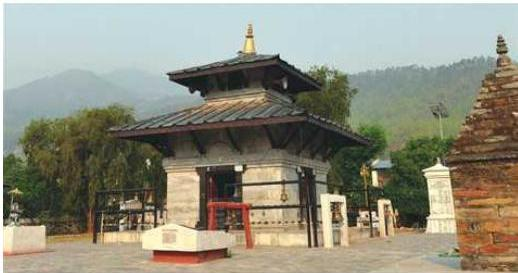
वैजनाथ धाम, अखाम
वैजनाथ धाम अखाम जिल्लाको बुढीगङ्गा र साँफे खोलाको किनारमा पर्दछ । शिवरात्रिको समयमा यहाँ ठुलो मेला लाग्छ । यहाँ नेपालका विभिन्न स्थानदेखि भारतबाट समेत श्रद्धालुको ठुलो भिड लाग्दछ ।
वीरेन्द्रनगर
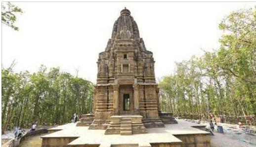
काँक्रे विहार, सुर्खेत
वीरेन्द्रनगर नगरपालिका सुर्खेत जिल्लामा पर्दछ, जुन कर्णाली प्रदेशको राजधानी हो । वीरेन्द्रनगर क्षेत्रका बुलबुले ताल, काँक्रे विहार, देउती बज्यै, शिव मन्दिर र घण्टाघर यहाँका
नेपाल परिचय/३९९
मुख्य धार्मिक तथा पर्यटकीय स्थल हुन् । सुन्दर नगरी वीरेन्द्रनगर गोठीकाँडा डाँडाबाट हेर्दा आकर्षक र मनमोहक दृश्य देखिने भएकाले यस क्षेत्रमा आउने पर्यटक दिनानुदिन बढ्दै गएका छन् ।
विराटनगर
यहाँ विभिन्न किसिमका उद्योगधन्दा फस्टाएकाले यसलाई औद्योगिक सहरसमेत भनिन्छ । यो नेपालको व्यापारिक एवम् औद्योगिक केन्द्रमेयत हो । घना आवादी र ठुलो सहर भएकाले यसलाई महानगरपालिकाको रूपमा वर्गीकरण गरिएको छ ।
कोशी प्रदेशको मोरङ जिल्लामा पर्ने यस सहरमा विराटनगर जुटमिललगायतका नेपालका पुराना र महत्वपूर्ण कारखाना तथा उद्योगहरू रहेका छन् । त्यसैले विराटनगरलाई नेपालको औद्योगिक राजधानी पनि भन्ने गरिन्छ ।
वीरगन्ज
! 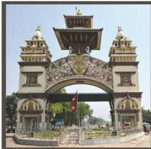 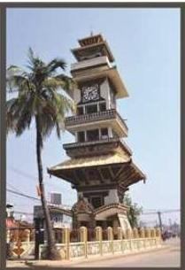
वीरगन्ज नाका र घण्टाघर, पर्सा
मधुवनको पारसनाथ मन्दिरको नामबाट ‘पारस’ नाम रहन गएको पर्सा जिल्लाको सदरमुकाम वीरगन्ज हो । नेपालको मुख्य प्रवेशद्वारको रूपमा परिचित वीरगन्ज नगर नेपालको आर्थिक राजधानीको रूपमा समेत स्थापित हुँदै आएको छ । औद्योगिक तथा व्यापारिक सहर वीरगन्जको मौलिक परिचय रहेको छ । वीरगन्ज नेपालको प्रजातान्त्रिक आन्दोलनको कार्यस्थल पनि हो । वीरगन्जको प्रसिद्ध मन्दिर गहवा माईथान मुख्य बजारसँगै रहेको छ । वीरगन्ज नगरको निकटवर्ती सिम्मैनगढ, गढीमाई, विन्ध्यवासिनी मन्दिर, पारसनाथ मठ आदिले वीरगन्जको ऐतिहासिक तथा धार्मिक महत्व स्थापित
४००/नेपाल परिचय
गरेका छन् । वीरगन्ज नगरको एउटा आकर्षण यस नगरको केन्द्रमा रहेको घण्टाघर हो । हाल यसले महानगरपालिकाको रूपमा आफूलाई स्थापित गराएको छ । वीरगन्जलाई सबभन्दा पहिले त्रिभुवन राजपथले काठमाडौँसँग जोडेको थियो । नेपालबाट निर्यात गरिने वस्तु र नेपालमा आयात गरिने वस्तुहरूमध्ये धेरै वस्तुको ढुवानी वीरगन्जको बाटोबाट हुने भएकाले वीरगन्जलाई सुक्खा बन्दरगाह (Dry Port) को रूपमा विकास गर्ने अवधारणाले बल पाउन थालेको पाइन्छ ।
सगरमाथा
पृथ्वीको संरचनामा सबैभन्दा अग्लो स्वरूप लिएर रहेको सगरमाथा सम्पूर्ण मानव जातिको आकर्षण र अत्यन्तै साहसी यात्राको केन्द्र भएको छ । महालङ्गुर हिमालय शृङ्खलामा अवस्थित यस हिमशिखरको उचाइ समुद्री सतहदेखि ८,८४८.८६ मिटर रहेको छ । कोशी प्रदेशको सोलुखुम्बु जिल्लामा रहेको यो हिमशिखर आरोहणका लागि सन् १९४९ मा खुला गरिएपश्चात् सर्वप्रथम मे २९, १९५३ मा नेपालका तेन्जिङ नोर्गे शेर्पा तथा न्युजिल्यान्डका एडमन्ड हिलारीले सफल आरोहण गरेपछि सगरमाथा विश्व चर्चाको विषय बन्यो । सन् १९५६ मा नेपालका इतिहास शिरोमणि बाबुराम आचार्यले यस शिखरलाई नेपाली नाम सगरमाथा दिएका हुन् । बेलायतका सर्भेयर जर्ज एभरेस्टले नेपालका हिम शिखरहरूको सर्वेक्षण गरेकाले सन् १९६५ मा उनकै नाममा सगरमाथालाई अङ्ग्रेजी नाम माउन्ट एभरेस्ट प्रदान गरिएको र अन्तर्राष्ट्रिय जगत्मा यस शिखरलाई सामान्यतः यही नामबाट चिन्ने गरिएको पाइन्छ । चिनियाँ भाषामा भोमोलोङ्मा र तिब्बती भाषामा मिटिगुटी चापुलोङ्मा भनिने यस शिखरको आरोहण गर्ने प्रथम महिला जापानकी जुन्को तावेई हुन् । नेपालमा प्रथम पटक पासाङ ल्हामु शेर्पाले सगरमाथाको सफल आरोहण गरी नेपाल र नेपाली महिलाको गौरव बढाएकी थिइन् ।
विश्वको सर्वोच्च शिखर सगरमाथा वास्तवमा प्रकृतिको अनुपम उपहार हो । सम्पूर्ण मानव समुदायका लागि गौरव र आकर्षणको प्रतीकको रूपमा रहेको यस शिखरले नेपाललाई बाहिरी संसारमा सगरमाथाको देशको रूपमा समेत चिनाउन योगदान दिएको छ । सगरमाथाको द्वार उपनामले सुपरिचित हिमाली क्षेत्रको प्रसिद्ध बजार नाम्चे भएर पुम्पुने सगरमाथाकै हाराहारीमा ल्होत्से, ल्होत्सेसार, नुप्से जस्ता हिमशिखरहरूसमेत रहेका छन् । विश्वकै सर्वोच्च स्थानमा रहेको बौद्ध गुम्बा त्याङबोचे र विश्वकै सर्वोच्च स्थानमा रहेको विमानस्थल स्याङबोचेसमेत सगरमाथाको काखमा अवस्थित छन् ।
स्वर्गद्वारी
प्युठान जिल्लाको सदरमुकाम खलजाबाट भन्डै २६ कि.मि. पश्चिमतर्फ ६,९६० फिट उचाइ भएको लेकमा अवस्थित प्रसिद्ध धार्मिक स्थल नै स्वर्गद्वारी हो । परापूर्वकालमा ऋषिमुनिहरूले जपतप गरी स्वर्ग पुगेको भन्ने जनश्रुतिअनुसार नै यस स्थानको नाम स्वर्गद्वारी रहन गएको हो भन्ने विद्वान्हरूको विश्वास रहेको पाइन्छ । धार्मिक तथा पर्यटकीय दृष्टिकोणले महत्वपूर्ण यस स्वर्गद्वारीमा सिंगमर्मर्ममाथि शिवलिङ्ग राखी निर्माण गरिएको
नेपाल परिचय/४०१
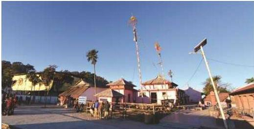
स्वर्गद्वारी मन्दिर, प्युठान
पक्की मन्दिर रहेको छ भने यसको वरपर सयौँको सङ्ख्यामा गाई पाल्ने गाईगोठ, रमणीय गुफा, यज्ञशाला तथा पोखरीहरू रहेका छन्। हरेक वर्षको वैशाख पूर्णिमा र कात्तिक पूर्णिमाका दिन यहाँ विशाल धार्मिक मेला लाग्दछ। नेपालका विभिन्न स्थान तथा भारतबाट समेत हजारौँको सङ्ख्यामा तीर्थयात्रीहरू मेलामा सहभागी हुन यहाँ आउँछन्। स्वर्गद्वारीमा त्यहाँका महाप्रभुले करिब १२० वर्षअधि सुरु गरेको अखण्ड होम अहिले पनि जारी रहेको छ। स्वर्गद्वारीमा संस्कृत पाठशाला र वेद विद्याश्रम सञ्चालन भएको पनि पाइन्छ र वेद तथा धर्मकर्मको अध्ययन गर्नका निमित्त टाढाटाढाबाट आउने विद्यार्थीहरूलाई खानपिन र बसाइको निःशुल्क व्यवस्थासमेत रहेको पाइन्छ। दाङ जिल्लामा त्यस आश्रमको गुठीको नाममा धेरै जमिन रहेको छ। भिड़घ्री भन्ने बजारको निजकैबाट केही घण्टाको उकालो पैदल हिंडेर स्वर्गद्वारी आश्रममा पुग्न सकिन्छ भने भिड़घ्री बजारदेखि यो आश्रमसम्म कच्ची सडक पनि निर्माण गरिएको छ।
सहलेश
सिराहा जिल्लाको लहान बजारदेखि ३ कि.मि. दक्षिण पश्चिममा पनि एक फूलबारीमा नयाँ वर्षको पहिलो दिन मात्रै हारमको रुखमा माला आकारमा फूल फुल्छ। फूलबारीको बीचमा मालिनीको मन्दिर छ, जुन पर्यटकका लागि आकर्षक मानिएको छ। यो फूललाई राजा सहलेश र दौना मालिनीको चीर प्रेमको प्रतीक मानिन्छ।
नेपाली सभ्यताको खानी : सिँजा उपत्यका र कनकासुन्दरी मन्दिर
जुम्ला जिल्लामा पनि सिँजा उपत्यका मध्यकालमा नागराजले स्थापना गरेको खस मल्ल राज्यको राजधानीको रूपमा रहेको थियो। त्यसैले नेपालको राष्ट्रभाषा नेपालीको उत्पत्तिस्थलको रूपमा समेत परिचित रहेको सिँजा उपत्यकालाई प्राचीन संस्कृति र सम्पदाको केन्द्रको रूपमा समेत लिनुपर्ने देखिन्छ। कर्णाली प्रदेशको खस मल्ल राज्यले आफ्नो सीमा
४०२/नेपाल परिचय
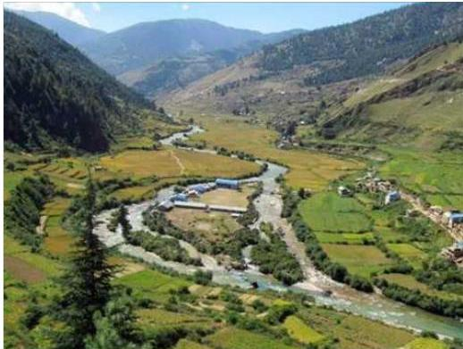
सिँजा उपत्यका, जुम्ला
काठमाडौँको सीमावर्ती क्षेत्रसम्म नै विस्तार गरेको कुरा ऐतिहासिक घटनाक्रमहरूले पुष्टि गर्ने हुँदा सिँजा उपत्यकामा केन्द्र रहेको खस मल्ल राज्य अत्यन्त शक्तिशाली थियो भन्ने कुरा स्पष्ट हुन्छ। यस उपत्यकाको निजकै मुगु जिल्लामा नेपालको सबैभन्दा ठुलो ताल रारा रहेकाले यसले नेपालको एउटा महत्वपूर्ण पर्यटन केन्द्रको रूपमा विकसित हुने प्रशस्त सम्भावनाहरू बोकेको देखिन्छ।
जुम्ला जिल्लाको सिँजा उपत्यकामा रहेको कनकासुन्दरी मन्दिर ऐतिहासिक, धार्मिक, पर्यटकीय, सामाजिक एवम् सांस्कृतिक रूपले नेपालकै महत्वपूर्ण स्थल हो। सिँजाको माथिल्लो भागमा अवस्थित यो मन्दिर हिमा नदीको किनारमा रहेको थुम्काको टुप्पामा छ। मन्दिरसँगै प्राचीन खस राजाको दरबार, तत्कालीन राज्यको केन्द्र लामाथाडा, राजाको लुगा घुने धोबीघाट, मन्दिरको ढोकामा रहेका सिउबाघ (देवीको द्वारे सिंह) जस्ता प्राचीन सभ्यताका प्रतीक छन्।
एघारौँ शताब्दीमा सिँजा राज्यको उदय एवम् विस्तार भए पनि सिँजा राज्यको स्थापना आजभन्दा ३४६१ वर्षअघि अर्थात् इसापूर्व १४४४ मा राजा जालन्दरले गरेका थिए। राजा जालन्दर शिवभक्त भएकाले शिवको अधिल्लो अक्षर ‘शि’ र आफ्नो नामको अधिल्लो अक्षर ‘जा’ बाट जोडेर सिँजा नाम रहन गएको जनश्रुति भेटिन्छ। श्री स्वस्थानी ब्रतकथामा उल्लेख गरिएको शक्तिशाली राजा जालन्दर र उनकी पतिव्रता रानी वृन्दाले राजकाज
नेपाल परिचय/४०३
गरेको यस क्षेत्रमा प्रकृतिपूजाको प्रतीक मस्टो धर्म प्रचलनमा छ। पुराणहरूमा वृन्दालाई पतिव्रता र तपस्वी नारीका रूपमा चित्रण गरिएको पाइन्छ, जुन सिँजा राज्यका संस्थापक राजा जालन्दरकी पत्नी हुन्। कनकासुन्दरी मन्दिरमा रहेको देवीमध्ये जालपादेवी यिनै जालन्दरपत्नी वृन्दा हुन् भन्ने विश्वास गरिन्छ।
इतिहासमा लेखिएअनुसार एघारौँ शताब्दीदेखि सिँजामा खस राजा नागराजले र उनका उत्तराधिकारीले करिब ३०० वर्षसम्म शासन गरेका थिए। उनको राज्य पश्चिमका कुमाउँ, गडवालसम्म र पूर्वमा सेन राज्यसम्म फैलिएको थियो। उनै शक्तिशाली खस राजाले समेत कुलदेवीको रूपमा पुग्ने गरेको शक्तिकी स्रोत कनकासुन्दरी देवी समग्र खस सभ्यताको प्रतीक रहेको छिन्।
सतीदेवीको तल्लो ओठ पतन भएकाले त्यस स्थानमा कामधेनु गाई आएर तपस्या गरी आफ्नो इच्छा प्राप्त गरेको श्रीस्वस्थानी ब्रतकथामा पाइन्छ। कनकासुन्दरी मन्दिर रहेको स्थानमा कनकासुन्दरी, जालपादेवी, कालिकादेवी, सूर्यनारायण एवम् लामाको मन्दिर रहेका छन्। कनकासुन्दरी मन्दिरमा देवीको मन्दिरसँगै लामा मन्दिर हुनाले प्राचीनकालमा बौद्ध धर्मको समेत प्रभाव रहेको र धार्मिक सहिष्णुता रहेको पाइन्छ।
बडा दसैँ र चैते दसैँमा कनकासुन्दरी मन्दिरमा ठुलो मेला लाग्ने गर्छ। बडा दसैँको नवमीको दिन यहाँ बलि पूजा हुने गर्दछ। सिँजा क्षेत्रका नागरिकले आफ्नो नौलो अन्न सर्वप्रथम देवीलाई चढाएर मात्र आफ्नो उपयोगमा ल्याउने गर्छन्। दसैँको जमरा र टीका देवीलाई चढाइसकेपछि मात्र घरघरमा लगाउने, साउने सड्कालिमा घरघरमा बाल्ने राँको (दियो) कनकासुन्दरी मन्दिरमा बलेपछि मात्र बाल्ने चलन अहिले पनि छ। दसैँमा देवीको मन्दिरमा बलि चढेपछि मात्र बेलुका घरघरमा खसी काट्ने प्रचलनसमेत रहेको छ।
यस्तो परम्परा सदियौँदेखि चल्दै आएकाले कनकासुन्दरी मन्दिरको महत्व र आस्था कति छ भन्ने थाहा हुन्छ। हरेक घटनाको साक्षीको रूपमा मानिने देवीको दर्शनले आफ्नो मनोकाड्ढा पूरा हुन्छ भन्ने जनविश्वासले बर्सेनि हजारौँ मान्छे कनकासुन्दरी मन्दिरको दर्शन गर्न जान्छन्। मन्दिरसँगै रहेको खस राजाको दरबारको भग्नावशेष, मन्दिरबाट देखिने सिँजा उपत्यकाको दृश्य, हिमा नदीको नागबेली र मासौँ धानको उत्पादन हुने सिँजाको फाँटले जोकोहीलाई यस क्षेत्रको भ्रमण गर्न लालायित गर्छ।
श्रीस्थान ज्वाला क्षेत्र
कर्णाली प्रदेशको दैलेख जिल्लास्थित छामघाट खोला र नाभिस्थान खोलाको किनारमा ऐतिहासिक श्रीस्थान मन्दिर रहेको छ। यो ऐतिहासिक, धार्मिक तथा पर्यटकीय दृष्टिकोणले महत्वपूर्ण मानिन्छ। जिल्ला सदरमुकाम दैलेख र दुल्लु क्षेत्रको बीचमा रहेको यो क्षेत्र श्रीस्वस्थानी ब्रतकथाअनुसार सत्यदेवीको मृत शरीरलाई महादेवले बोकी परिक्रमा गर्ने क्रममा सत्यदेवीको शिर पतन भई ज्वालाको उत्पत्ति भएको पौराणिक मान्यता रहेको छ। त्यसै समयदेखि यहाँ निरन्तर ज्वाला बलिरहेको छ। श्रीस्थान तथा नाभिस्थान ज्वालाको
४०४/नेपाल परिचय
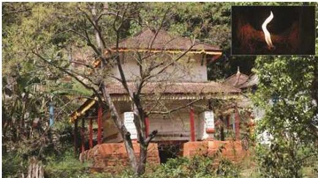
श्रीस्थान, दैलेख
दर्शन गर्न बर्सेनि ठुलो सङ्ख्यामा पर्यटकहरू आउने गर्दछन् । पानीमाथि आगो बाल्न सकिने क्षेत्रको रूपमा परिचित यस स्थानमा हाल नेपाल सरकारले चिनियाँ विशेषज्ञको सहयोगमा पेट्रोलियम पदार्थको अन्वेषण गरिरहेको छ ।
सहिद स्मारक वा नेपाल स्मारक
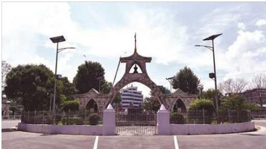
सहिद गेट, काठमाडौँ
नेपालमा प्रजातन्त्र स्थापनाका लागि विशिष्ट योगदान गर्ने व्यक्तिहरू श्री ५ त्रिभुवन, सहिद शुक्राज शास्त्री, धर्मभक्त माथेमा, गङ्गालाल श्रेष्ठ, दशरथ चन्दको स्मृतिमा
नेपाल परिचय/४०५
र अन्य ज्ञात-अज्ञात सहिदहरूको सम्मान र सम्भन्नामा सिंहदरबार र धरहराको बीचमा कलात्मक द्वारको आकारमा निर्माण गरिएको यो स्मारकको वास्तविक नाम नेपाल स्मारक हो। जमिनको सतहदेखि ४० फिट अग्लो नेपाल स्मारक (सहिद स्मारक द्वार)को डिजाइन इ. शड्करनाथ रिमालबाट गरिएको हो भने निर्माण सुपरीवेक्षण इ. गौरीनाथ रिमालबाट भएको हो। यो स्मारकमा रहेका मूर्ति तथा चित्रहरूको निर्माण मूर्तिकारद्द्र्य बाबुकाजी तुलाधर र बालकृष्ण तुलाधरद्वारा भएको हो।
सिद्धकाली मन्दिर
सङ्खुवासभाको चैनपुर बजारबाट एक कोस पर रहेको यो ठाउँमा महादेवकी अर्धाञ्जिनी सती देवीको दाहिने आँखा पतन भएकाले यो ठाउँलाई महत्वपूर्ण शक्तिपीठ मानेर मन्दिर निर्माण गरी देवीको प्रतिमा स्थापना गरिएको छ। यसको निजकै भगवान् महादेवको मन्दिर पनि निर्माण गरिएको छ।
स्वयम्भू महाचैत्य
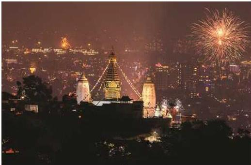
स्वयम्भू महाचैत्य, काठमाडौँ
प्रसिद्ध बौद्ध तीर्थस्थल स्वयम्भू काठमाडौँ उपत्यकाको पश्चिमी भागमा पर्ने पद्मगिरी (बज्रकूट/ गोशुङ्ग/गोपुच्छगिरी) पर्वतमा अवस्थित छ। स्वयम्भू अर्थात् आफैँ उत्पत्ति भएको हुनाले स्वयम्भू भनिएको हो। स्वयम्भूको उत्पत्ति उपत्यकाको कालीदहमा श्री विपस्वी तथागतले रोप्नुभएको कमलको बीजबाट एक हजार पत्ता भएको कमलको फूलबाट पञ्चराशिमको रूपमा भएको हो। यस पवित्र राशिमको दुरुपयोग नहोस् भन्नका लागि गौड देशबाट आएका राजा प्रचण्डदेवले सो राशिमलाई छोपेर विधिवत् स्वयम्भू
४०६/नेपाल परिचय
महाचैत्यको प्रतिष्ठा गर्नुभयो । महाचैत्य निर्माण गरिसकेपछि यसको निजकै शान्तिपुर निर्माण गरी ध्यानमा तल्लीन हुन थाले । पछि यिनी शान्तिकराचार्य नामले प्रसिद्ध भए । स्वयम्भू हालसम्म पनि नेपालभित्रको बौद्ध एवम् हिन्दु सबै धर्मावलम्बीका लागि पवित्र देवस्थल रहँदै आएको छ । वैशाख शुक्ल पूर्णिमाका दिन यहाँ ठुलो महोत्सव आयोजना गरिन्छ । स्वयम्भूको आनन्दकुटी महाविहारमा भगवान् बुद्धको पवित्र अस्थि धातु (हाड) सुरक्षासाथ राखिएको छ । पहिलेको अस्थि धातु चोरी भएपछि श्रीलङ्काबाट वि.सं. २०५१ मा प्राप्त अस्थि धातु वि.सं. २०५५ वैशाख शुक्ल पूर्णिमाका दिन पहिलो पटक नगर परिक्रमा गराइएको थियो । स्वयम्भूबाट काठमाडौँ उपत्यकाको रमणीय दृश्यको अवलोकन गर्न सकिन्छ ।
सूर्यविनायक
भक्तपुर जिल्लास्थित सूर्यविनायकको मन्दिरमा गणेशको मूर्ति स्थापना गरिएको छ । यही मन्दिरको आधारमा यस ठाउँको नामकरण गरिएको हो । सूर्यविनायकबाट भक्तपुर सहर र चोरैतिर सुन्दर हिमालहरूको दृश्यावलोकन गर्न सकिने र यहाँ सुन्दर वनकुञ्जसमेत भएकाले वनभोजका लागि नेपालीहरू र दृश्यावलोकन गर्न विदेशीहरूसमेत जाने हुँदा यो ठाउँको महत्व बढ्न गएको छ ।
सराङकोट
पर्यटकीय दृष्टिले काठमाडौँका लागि नगरकोट महत्वपूर्ण भएजस्तै पोखराका लागि सराङकोटको ठुलो महत्व छ । कास्की जिल्लामा पर्ने सराङकोट पोखराको पश्चिमोत्तर भागमा पर्दछ । यो ठाउँबाट अन्नपूर्ण, माछापुच्छ्रे, धौलागिरि, पोखरा उपत्यका र पोखराको फेवाताललगायतका विभिन्न तालहरूको मनोरम दृश्यावलोकन गर्न सकिन्छ ।
हिल्सा
हिल्सा हुम्ला जिल्लाको सदरमुकाम सिमिकोट जोड्ने नेपाल र चीनबीचको उत्तरपश्चिममा पर्ने नाका हो । यारी भञ्ज्याङ हुँदै हिल्सा पुगिन्छ । हिल्सा चीनको मानसरोवर आवतजावत गर्ने नाका हो । यहाँ भोटे जातिको पातलो बस्ती रहेको छ । उक्त स्थानमा पाइने प्राकृतिक सौन्दर्य, स्थानीय सम्पदा क्षेत्रलगायतको संरक्षण गरी पर्यटकीय स्थलका रूपमा विकास गर्न सकिने प्रचुर सम्भावना रहेको छ ।
हलेसी महादेव मन्दिर र गुफा
खोटाङ जिल्लाको सदरमुकाम दिक्केलदेखि पश्चिम भागमा कैलाश पर्वत भनिने थुम्को २०० फिटको उचाइसम्म प्राकृतिक रूपमा निर्मित शिवलिङ आकारको संरचनालाई हलेसी महादेव भनिन्छ । बाहिरी चारओटा ढोका रहेको यो गुफाभित्र निष्पक्ष अन्धकार छ । हलेसी गुफामा प्राकृतिक आकृतिहरू र धार्मिक आस्थाको मनोरम समन्वय भएको छ । यहाँ रामनवमीका अवसरमा १६ दिनसम्म मेला लाग्दछ । सो अवसरमा यहाँ सबैभन्दा बढी
नेपाल परिचय/४०७
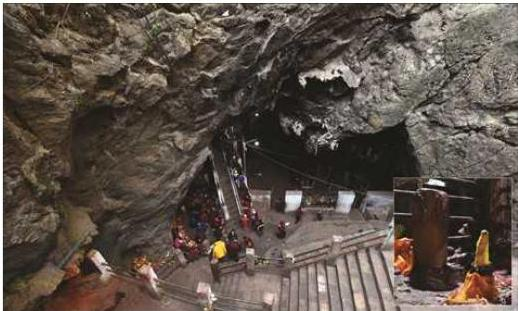
हलेसी महादेव, खोटाङ
मानिसहरूको जमघट हुन्छ। महाशिवरात्रिका दिन भोटे जातिका मानिसहरू यहाँ आएर सुम्निमा पारुहाडका रूपमा शिव-पार्वतीको पूजा गर्दछन् भने बालाचतुर्दशीका दिन यहाँ टाढाटाढाबाट मानिसहरू आएर शतबीज छर्दछन्।
त्रिपुरासुन्दरी देवी
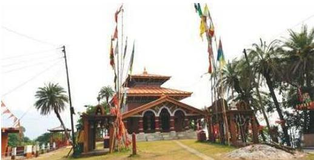
त्रिपुरासुन्दरी, बैतडी
बैतडी जिल्लाको यो प्रमुख तीर्थस्थलमा भगवती देवीको मूर्ति स्थापना गरिएको छ। पौराणिक कालमा भगवतीले त्रिपुरासुर नामको दैत्यको वध गरी देवता तथा मानव जातिको
४०८/नेपाल परिचय
दुःख निवारण गरेकाले यिनको नाम त्रिपुरासुन्दरी देवी रहेको मानिन्छ । यी देवीलाई स्थानीय बासिन्दा राणाशयनी भगवती पनि भन्दछन् ।
त्रिवेणी धाम, वाल्मीकि आश्रम र गजेन्द्रमोक्ष धाम
चितवन जिल्लाको दक्षिण-पूर्वी भागमा तत्कालीन गर्दी गाविसअन्तर्गत स्वर्णभद्रा, तमसा र नारायणी नदीको त्रिवेणीमा नारायणी नदीपारि वा पूर्वी तटमा महामुनी तथा संस्कृत साहित्यका आदिकवि रामायणका रचयिता महर्षि वाल्मीकिको आश्रम छ । यहाँ नै वाल्मीकिले रामायण ग्रन्थको रचना गरेका थिए । यहाँ पुरातात्विक महत्वका प्राचीन मूर्ति, महर्षि वाल्मीकिद्वारा स्थापित हरिहर मन्दिर, यज्ञशाला, लवकुश पाठशाला, सीताकुटी, सीताकुप र आश्रमहरू छन् । यहाँ माघे औँसीको दिन ठुलो मेला लाग्दछ । पवित्र तीन नदीहरूको सङ्गम त्रिवेणीमा स्नान गरेमा पापमोचन हुने र यहाँ देहत्याग गरेमा मोक्ष प्राप्त हुने धार्मिक विश्वास रहेकाले यो स्थान कल्पवासीहरूको आश्रमस्थल बनेको छ ।
पवित्र धार्मिक स्थल बुढीनन्दा
! 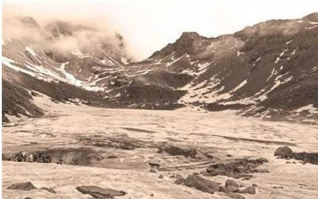
बाजुरा जिल्लामा अवस्थित धार्मिक एवम् पर्यटकीय ऐतिहासिक पावन क्षेत्र बुढीनन्दा मन्दिर शैपाल हिमालको दक्षिणी हिमशृङ्खला, उत्तरमा फुलैगुम्बा र सैन पाटन, पाटुका त्रिवेणी धाम र कोल्टी विमानस्थलबाट उत्तरतिर पर्छ । प्राकृतिक सुन्दरताले भरपुर देवी क्षेत्रमा सानाठुला गरी सातओटा ताल छन् । सबै ताल चट्टानमै अवस्थित छन् । मन्दिरसँगै जोडिएको ‘निजार ताल’ तिलिचो तालपछि विश्वको सर्वाधिक दोस्रो उचाइमा रहेको ‘अल इन्फो नेपाल’ नामक पुस्तकमा बताइएको छ । दुई ठुला पहाडको बीच गोलो आकारमा चट्टानैचट्टानमा अवस्थित
नेपाल परिचय/४०९
ताल समुद्री सतहबाट ४ हजार ५ सय ८१ मिटरको उचाइमा रहेको छ । तालको लम्बाइ, चौडाइ र गहिराइको विस्तृत अध्ययन हुन बाँकी नै छ । तालको परिक्रमा गर्न तन्नेरीलाई भन्डै एक घण्टा लाग्छ । बुढीनन्दा निजार तालसँगै जोडिएका क्रमशः मष्टा ताल, कैलाश ताल र करिब तीस-चालीस मिटर मात्रै पर रहेको लड्कारी (राक्षस) दह (ताल) छ । लड्कारी दहको छुट्टै विशेषता छ । सो दहमा राक्षस बस्ने गरेको जनविश्वास रहँदै आएको छ । निजार दह हुँदै आएको पानी ठुलो भरना भएर बगेको दृश्यले मनै आह्लादित तुल्याउँछ । भरनाको पानी र आसपासबाट निस्किएका अन्य मूलको पानी मिसिएर नागबेली रूपमा लडीबुडी खेल्दै सेतो दुधभैं बन्दै लेकदेखि बैंसीसम्मका स्थानीय गाउँबस्तीका खेतीबारी सिंचन गरेर पादुका त्रिवेणी धाम कर्णालीमा आएर मिसिन्छ ।
बुढीनन्दाको नाम यसरी रहन गयो भन्ने आधार अहिलेसम्म कतै भेटिएको छैन । स्थानीय एकथरीको भनाइअनुसार ‘सतिदेवीको देव्रे हातको बुढीनन्दा पतन भएको हुनाले बुढीनन्दा नाम रहन गएको हो ।’ अर्काथरीको भनाइअनुसार ‘सतिदेवी र नवदुर्गा देवीको अवतार हुनुभन्दा अगाडि नै बुढीनन्दाको जन्म भएको हो । नवदुर्गा भवानीमध्ये सबैभन्दा जेठी बहिनी बुढीनन्दा हुन्, जसले आजीवन विवाह गरिनन्’ भन्ने किंवदन्ती रहँदै आएको छ ।
४ हजार ५ सय ८१ मिटरको उचाइमा रहेको बुढीनन्दा ताल क्षेत्र पर्यटकीय हिसाबले महत्वपूर्ण त छ नै, बाजुरा, बभ्राड, डोटी, अछाम, कैलाली, कालिकोट, मुगुलगायत जिल्लाका स्थानीयको धार्मिक आस्थाको केन्द्रको रूपमा पनि रहेको छ । यहाँका स्थानीय हरेक वर्ष जनैपूर्णिमाको दिन खाली खुट्टा हिंडेर बुढीनन्दाको दर्शन गर्न जाने गर्छन् । यस क्षेत्रका बासिन्दामा बुढीनन्दा माईको पूजा तथा आराधनाले चिताएको कुरा पूरा हुने र बुढीनन्दा तालमा स्नान गर्दा सबै पाप पखालिने जनविश्वास छ । ताल क्षेत्रमा बाह्रेमास हिउँ हुन्छ । हिउँदयाममा यो क्षेत्र पूरै हिउँको सिरकभित्र गुटमुटिन्छ । हिमाली पठार छिचोल्दै त्यहाँ पुग्नुपर्ने भएकाले यो समय मानिसहरूको चलहपहल शून्य हुन्छ । यद्यपि बर्खामा भने यस क्षेत्रमा मानिसको चहलपहल राम्रै देखिन्छ । चौरमा चर्न छोडिएका घोडा र भेडाका बथानले यस क्षेत्रको रौनक नै बेग्लै देखिन्छ ।
जलजला
रोल्पा जिल्लाको सदरमुकाम लिबाडबाट ऐतिहासिक गाउँ थबाड २६ कोस टाढा रहेको छ । ऐतिहासिक गाउँ थबाडबाट तीन घण्टाको पैदलयात्रापछि पर्यटकीय स्थल जलजला पुग्न सकिन्छ, थबाडबाट मात्र नभई जेलबाङ, धबाङ र मिरुलबाट समेत यस क्षेत्रमा पुग्न सकिन्छ । प्रत्येक वर्ष तीन पटक नियमित रूपमा वराह पूजा हुने उक्त क्षेत्र भौगोलिक रूपमा अत्यन्तै मनमोहक र रमणीय छ । जिल्लाकै अग्लो स्थानको जलजला थबाड गाउँपालिकामा पर्छ । भौगोलिक रूपमा सुन्दर भएकाले सबैलाई लोभ्याउँछ । समुद्री सतहबाट ३,२५० मिटर उचाइमा रहेको यस क्षेत्रमा वैशाख, जेठ र साउने पूर्णिमाको दिन हजारौँको सङ्ख्यामा भेडा र कुखुराको बली दिई पूजाआजा गर्नुका साथै विशेष मेला हुने गरेको छ । धार्मिक रूपमा
४१०/नेपाल परिचय
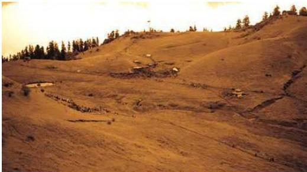
जलजला, रोल्पा
१२ भाइ बराह र २२ बहिनी बजुहरूको जन्म जलजलाको भामा पुप (ओडार) मा भएको भन्ने जनविश्वास रहेको पाइन्छ, जहाँ पूजाआजा गर्दा आफूले मागेको कुरा पाइन्छ भन्ने जनविश्वास रहेको छ ।
सिमसार प्रकारको जमिनमा पाइला राख्दा थलथल गर्छ । श्रद्धालुले जमिनमा हिँड्दा कपासमा हिँडे जस्तो अनुभव गर्छन् । मेलामा हजारौँको सङ्ख्यामा श्रद्धालु भक्तजन विभिन्न जिल्लाबाट आउने गर्छन् । प्राकृतिक, सांस्कृतिक र जैविक हिसाबले सुसज्जित यस जलजला क्षेत्रमा धुपी, कटुस, सेतो गुरौंस, भोजपत्र, लेकाली सल्लालगायत वनस्पति, १० प्रकारका लालीगुरौंस र जडीबुटीको अवलोकन गर्न सकिन्छ । त्यसैगरी डाँफे, मुनाल, कालिज, बैदेल, रेडपान्डा, बाघ, भालु, घोरल, मृग र रतुवालगायतका जनावर पनि देख्न सकिन्छ । जलजलाबाट धौलागिरि र सिस्ने हिमशृङ्खलाको निजकैबाट अवलोकन गर्न सकिन्छ ।
चिमारा मालिका
चिमारा मालिका जुम्ला जिल्ला गुठीचौर गाउँपालिका वडा नं. ४ मा अवस्थित एक प्रख्यात धार्मिक तथा पर्यटकीय स्थल हो । जुम्ला सदरमुकाम खलड्गाबाट पवित्र धार्मिक स्थल दानसौघु त्रिवेणी धाम हुँदै करिब १५ कि.मि.को दूरीमा रहेको यो रमणीय स्थानमा पैदलयात्रा गर्दा करिब पाँच घण्टा समय लाग्छ । जुम्ला सदरमुकामबाट गुठीचौर गाउँपालिकाको खल्लालवाडा गाउँ हुँदै करिब १८ कि.मि. कच्ची बाटोको गाडीको यात्रा र एक कि.मि.को पैदल हाईकिडपश्चात् पनि करिब ४२०० मिटरको उचाइमा रहेको चिमारा मालिकाको चुचुरामा सहजै पुग्न सकिन्छ ।
खसहरूका कुलदेवता बाह्र भाइ मस्टोका नौ बहिनी भवानीमध्ये एक बहिनी चिमारा
नेपाल परिचय/४११
मालिका भगवती हुन् भन्ने धार्मिक विश्वास छ। प्राकृतिक रूपमा मूल फुटेर आएको यहाँ रहेको शङ्कर पानीको धारामा उखाडी मस्टो, जगनाथ महावै, थापा मस्टो जस्ता विभिन्न देवीदेवताका पूजा सामग्री धुने (भारा नुहाउने) प्रचलन रहेको छ। श्रावण शुक्ल चतुर्दशीका दिन भगवतीको पूजा गरिन्छ र ठुलो धार्मिक मेला लाग्छ। यहाँ अवस्थित शङ्कर पानीमा नुहाएर चिमारा मालिका भगवतीको दर्शन गर्दा पवित्रता तथा पुण्य हुने र आफूले चिताएको भाकल प्राप्ति हुन्छ भन्ने प्राचीनकालदेखि विश्वास रहेको छ। चिमारा मालिका एक पवित्र तीर्थस्थलका साथै जुम्ला र चौधबिस उपत्यकाको मनोरम दृश्य अवलोकन गर्न सकिने प्राकृतिक भ्युटावरसहितको पर्यटन क्षेत्र हो।
गुठीचौर
प्राकृतिक सौन्दर्यले भरिपूर्ण समुद्री सतहबाट करिब ३५०० मिटरको उचाइमा रहेको गुठीचौर फाँट जुम्ला जिल्ला सदरमुकामबाट करिब २४ कि.मि.को दूरीमा जुम्ला जिल्ला गुठीचौर गाउँपालिका वडा नं. २ मा अवस्थित छ। सदरमुकाम खलङ्गाबाट सहजै गाडीबाट करिब एक घण्टामा र पैदलयात्रा गर्दा करिब ६ घण्टामा गुठीचौर लाग्नामा पुग्न सकिन्छ। पर्यापर्यटनको दृष्टिले यो नेपालकै एक उत्कृष्ट पर्यटन गन्तव्यस्थल हो। यहाँ पाइने उच्च हिमाली जडीबुटी, हावापानी, वनजङ्गल, घाँसे मैदान, हिमालबाट सोभै हिउँ पग्लेर बन्दै आएका हिमखोला र विशिष्ट स्थानीय जीवनशैलीको सम्मिश्रणले यहाँ पुग्ने जोकोहीलाई क्षणभरमा नै स्वर्गीय आनन्द दिन्छ।
जुम्लाका विभिन्न गाउँबस्ती र छिमेकी जिल्ला जाजरकोटबाट वर्षायाममा चरन तथा पालनपोषण गर्न ल्याइने स्थानीय गाईभैँसीको दुधबाट बनेको कुराउनी र मासौँ चामलको खिर यहाँ आउने पर्यटकको मुख्य रोजाइमा पर्छ। गुठीचौरमा उच्च पर्वतीय कृषि अनुसन्धान प्रतिष्ठानअन्तर्गत भेडा तथा बाख्रा अनुसन्धान कार्यक्रम सञ्चालित छ। यहाँ स्वदेश तथा विदेशका हिमाली क्षेत्रमा पाइने उन्नत तथा स्थानीय जातका भेडाबाख्रा पालेर अध्ययन अनुसन्धान र उन्नत जातका भेडाबाख्राको उत्पादन तथा प्रजनन कार्यका लागि वितरणसमेत गरिन्छ।
गुठीचौरमा बृहत् हाइड्रोपावर, कुत्रिम ताल, कर्णाली प्रदेशकै ठुलो विमानस्थल जस्ता बहुद्देश्यीय आयोजना निर्माण गर्न सकिने भौगोलिक तथा वातवरणीय सम्भावना भएको क्षेत्र हो। यो पर्यापर्यटनको दृष्टिले नेपालको एक उत्कृष्ट र सहजै पुग्न सकिने पर्यटकीय स्थल हो। निजकै कोल्ते र पुरानो जनजाति बस्ती चोत्रमा होमस्टे सञ्चालनमा छन्, जहाँ स्थानीय अर्गानिक परिकार उपलब्ध हुन्छन्।
डिग्रे साईकुमारी भगवती मन्दिर, रुकुम पश्चिम
डिग्रे साईकुमारी भगवती देवी मन्दिर कर्णाली प्रदेश रुकुम पश्चिम जिल्ला मुसीकोट नगरपालिका वडा नं. ५ थपु डिग्रेमा अवस्थित नेपालको एक महत्वपूर्ण ऐतिहासिक, धार्मिक तथा पर्यटकीय स्थल हो। आफ्नो मनले चिताएका र इच्छाएका कामना पूरा गर्ने
४१२/नेपाल परिचय
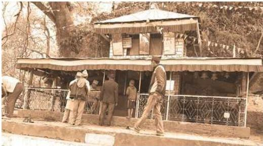
डिप्रे साईकुमारी भगवती मन्दिर, रुकुम पश्चिम
देवी भएका कारण डिप्रे साईकुमारी भगवती देवी मन्दिर नाम रहन गएको भन्ने किंवदन्ती रहिआएको छ ।
सोही किंवदन्तीका कारण यो साईकुमारी भगवती देवी मन्दिरलाई सम्भी आफूले चिताएको र इच्छाएको मनकामना पूरा होस् भन्ने भाकल गरेर बर्सेनि विभिन्न शुभसाइट हेरी हजारौँ दर्शनार्थीले आफूले गरेका भाकल पूरा गर्न यो मन्दिर आउने गर्छन् । यस मन्दिरमा दैनिक नित्य रूपमा पाठपूजा गर्ने र मुख्य मुनिको रूपमा कात्तिक चतुर्दशीलाई मानी विशेष पूजा गर्ने तथा बोका बलि चढाउने चलन चलिआएको छ । अन्य समयमा पनि मन्दिरमा बलि चढाउने गरेको पाइन्छ । मुख्य मन्दिर परिसरमा अन्य पाँचओटा मन्दिर पनि रहेका छन् ।
यहाँ हरेक वर्ष हरिबोधनी एकादशीदेखि कात्तिक शुक्ल पूर्णिमासम्म साईकुमारी भगवतीको पूजा आराधना गरी पूजा सम्पन्न गर्ने चलन छ । स्थानीय कला संस्कृति र नाचगानसँगै स्थानीय परम्पराको अनुपम सङ्गमको रूपमा रहेको यो मेलामा दर्शन गर्न रुकुमका स्थानीयसँगै छिमेकी जिल्ला रोल्पा, डोल्पा, सल्यान, जाजरकोट, प्युठान, दाङ, सुर्खेत, बाँकेलगायतका जिल्लाबाट समेत हजारौँ भक्तजनको भिड लाग्ने गरेको छ ।
गुप्तेश्वर गुफा
मकवानपुर जिल्लाको कैलाश गाउँपालिकाको वडा नम्बर १ र २ को सिमानामा रहेको गुप्तेश्वर गुफाको धार्मिक र ऐतिहासिक रूपमा निकै महत्व रहेको छ । करिब दुई सय मिटर लामो गुफाभित्र अमृतधाराबाट जल भरेर शिवलिङमा अर्पण भएको देख्न सकिन्छ, जसलाई अमृतजल भनेर नामकरण गरिएको छ । घुमाउरो सुरुङमा हातखुट्टा टेकेर निहुरिएर मात्र प्रवेश गर्न सकिन्छ । गुफाको भित्री भागमा दुईवटा कोठा जस्तै देखिन्छ । गुफाभित्र
नेपाल परिचय/४१३
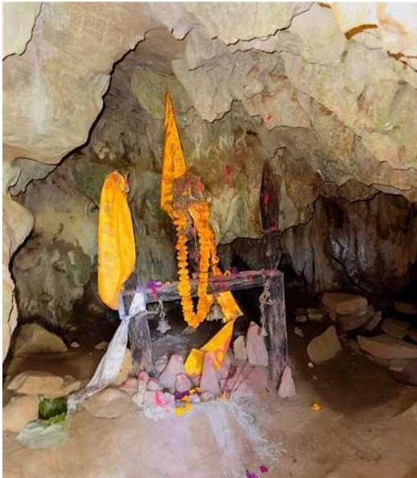
गुप्तेश्वर गुफा, मकवानपुर
हिरा जस्तो चम्कने ढुङ्गा छ भने हात्तीको सुँड, कलात्मक मादल, चिल, शिवलिङ, खेतका गहा, फूलका आकृतिहरू देख्न सकिन्छ ।
महादेव गुप्तवासका लागि लुक्दै जाने क्रममा खोलाखर्क र वैकुण्ठको बिच सिमानामा पर्ने फूलढुङ्गास्थित उक्त गुफामा लुक्न पुगेको किंवदन्ती रहेको छ । महादेव लुकेको गुफा भएकाले गुप्तेश्वर नामकरण गरिएको भन्ने भनाइ छ । सुरुङको माधिल्लो भागमा मादल जस्तै बज्ने खण्डखण्डका आकृति रहेका छन् । सेतो पदार्थले बनेको उक्त खण्डका आकृतिलाई हातले छुँदा मादल जस्तै आवाज निस्कने गर्दछ ।
४१४/नेपाल परिचय
नेपाल परिचय/ ४१५
विचित्र गुफा
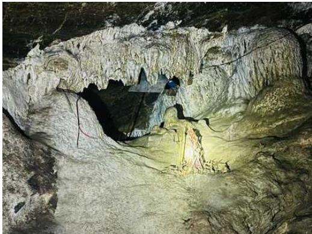
विचित्र गुफा, गुल्मी
गुल्मी जिल्ला, धुर्कोट गाउँपालिका-५ मा रहेको विचित्र गुफा १८५ मिटर लम्बाइ र ३५० मिटर चौडाइमा फैलिएको छ, जुन सदरमुकाम तम्यासबाट लगभग १८ किलोमिटर दुरीमा रहेको छ। कुनै मूर्त त कुनै अमूर्त अनौठा आकृतिहरू रहेकाले यसलाई ‘विचित्र गुफा’ भनिएको हो। गुफाभित्र विभिन्न देवी, देवताका मूर्तिहरू कुँदेर स्थापना गरेको प्रतीत हुन्छन्। कैलाश पर्वत भनिने स्थलमा शिवजी र पार्वतीको मूर्ति रहेको छ। लगभग बिच भागमा चौडा र अत्यन्त उचाइ भएको स्थल छ जसको टुप्पोमा श्रीकृष्ण भगवान्ले मुरली बजाएको, गोपिनीहरू नाचेको दृश्य देखिन्छ। गुफामा विभिन्न प्रजातिका चमेराहरू छन्। चमेरासम्बन्धी अनुसन्धाताका लागि यो एक प्रयोगशाला हुन सक्छ। उकालोतर्फ बढ्दै जाँदा गाईका थुनबाट दूध भरिरहेको देखिन्छ। अनौठा ढुङ्गाहरू रहेका र एक ठाउँमा प्रकाश बाल्दा पूरै ढुङ्गा प्रकाशमय बन्दछन्। गुफाको सबैभन्दा महत्वपूर्ण स्थान लगभग अन्तिम भागमा छ, जसलाई ‘स्वर्ग जाने बाटो’ भनिन्छ। त्यहाँ हातीको भीमकाय शरीर छ। साँघुरो बाटोमा धर्मात्मा छर्न सक्ने र पापी छर्न सक्दैनन् भन्ने जनविश्वास छ। आन्तरिक र बाह्य पर्यटकले भ्रमण गर्दै आएको यो स्थान ऐतिहासिक, धार्मिक र पर्यटकीय दृष्टिकोणले महत्वपूर्ण स्थानको रूपमा रहेको छ।
दोरबाराही मन्दिर
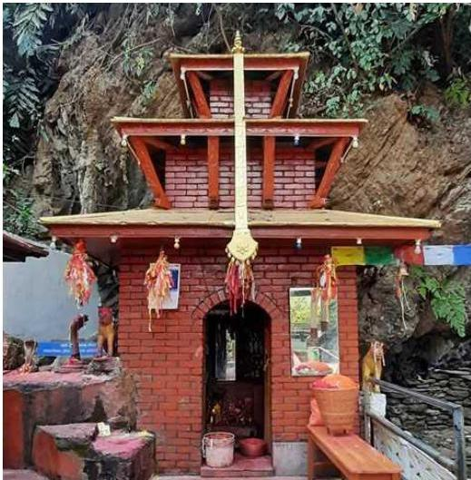
दोरबाराही मन्दिर, तनहुँ
गण्डकी प्रदेश, तनहुँ जिल्ला, शुक्लागण्डकी नगरपालिका-९ मा रहेको प्रसिद्ध धार्मिक स्थल दोरबाराही हिन्दु धर्मका अनुयायीहरूका लागि पवित्र मन्दिर मानिन्छ। यो मन्दिर पोखरा मार्गको दुलेगौंडा बजारबाट ५ कि.मि. पश्चिममा अवस्थित छ। मन्दिरपरिसरमा रहेको कुण्डमा थरीथरीका माछा पाइन्छन्। बेलाबेलामा कुण्ड भरिने गरी लहरी छुट्ने यस कुण्डको मुख्य विशेषता हो। कुण्डमा स्नान गराउँदा बोली नफुटेकाहरूको बोली आउँछ भन्ने जनविश्वास रहिआएको छ।
४१६/नेपाल परिचय
सन्दर्भ सागग्री
पुस्तक
- अमात्य, डा. साफल्य, नेपालमा पुरातत्त्व |
- अर्याल, कृष्णराज, नेपाली संस्कृति सङ्क्षिप्त भलक |
- खत्री, डा. प्रेम, नेपाली संस्कृति र समता |
- खत्री, डा. प्रेम, आधुनिक नेपालको सामाजिक इतिहास |
- दाहाल, पेशाल र खतिवडा, सोमप्रसाद, नेपालीको कला र वास्तुकला |
- निरौला, खगेन्द्र, नेपाल परिचय |
- नेपाल सरकार, सूचना विभाग, नेपाल अधिराज्यको सङ्क्षिप्त परिचय |
- नेपाल सरकार, सूचना विभाग, मेचीदेखि महाकाली (भाग १,२,३ र ४) |
- नेपाल सरकार, सूचना विभाग, नेपालका सम्पदाहरू |
- न्यौपाने, प्रा. डा. टड्कप्रसाद, भण्डारी, प्रा. डा. पारसमणि, न्यौपाने, दीपक, घिमिरे, तुल्सीराम, सामान्य भाषाविज्ञान |
- पाँडे, रामकुमार, नेपाल परिचय |
- पाँडे, रामकुमार, नेपालको मानव भूगोल |
- पाँडे, रामकुमार, नेपालको भौतिक भूगोल |
- पोखरेल, बुद्धिप्रसाद, नेपालको भौतिक, आर्थिक र सांस्कृतिक भूगोल |
- बज्राचार्य, धनबज्र, पूर्वमध्यकालका अभिलेख |
- मिश्र, मनोजबाबु, विश्व कलाको इतिहास |
- लामिछाने, डा. यादवप्रकाश, नेपाली भाषा र साहित्य |
- विष्ट, डोरबहादुर, सबै जातको फुलबारी |
- पाण्डेय, डा. हरिदत्त, नेपाल द्वैमासिक |
- सुवेदी, खगेन्द्रप्रसाद, मुद्रा, बैकिङ, राजस्व र अन्तर्राष्ट्रिय व्यापार तथा नेपालको अर्थशास्त्र |
- क्षेत्री, डा. गणेश, रायमाफी, रामचन्द्र, नेपालको इतिहास |
- क्षेत्री, डा. गणेश, रायमाफी, रामचन्द्र, नेपाली कला, वास्तुकला र प्रतिमा लक्षण |
- बज्राचार्य, प्रकाश, बौद्ध दर्पण, चौथो संस्करण |
- राष्ट्रिय योजना आयोग, सिंहदरबार, चौधौँ योजना, (आर्थिक वर्ष २०७३/७४-२०७५/७६) |
- राष्ट्रिय योजना आयोग, सिंहदरबार, पन्धौँ योजना (२०७६/७७-२०८०/८१) |
- खतिवडा, सोमप्रसाद, नेपालको पुरातत्त्व, कला, वास्तुकला र पर्यटनको परिचय |
- बज्राचार्य, यादिरत्न, नेपालको शिल्प सम्पदा |
- शाक्य, हेमराज, श्रीस्वयम्भू महाचैत्य |
- श्रेष्ठ, डा. सुरेश सुरस, स्वयम्भू महाचैत्य |
नेपाल परिचय/४१७
- श्रेष्ठ, डा. तुल्सीनारायण, नेपालका नेवारहरू ।
- लुम्बिनी विकास कोष, लुम्बिनी नेपाल, विश्व सम्पदा स्थल ।
- Chaudhary, Mahesh, 2012; Hidden Treasures of the Lowland Nepal.
- Foreign Policy of Nepal : Challenges and Opportunities, Institute of Foreign Affairs.
- National Population and Housing Census 2011 (National Report), Central Bureau of Statistics, Kathmandu, Nepal.
- Nepal Tourism Board
संविधान/ऐन/नियम/प्रतिवेदन
- नेपालको संविधान
- भूउपयोग ऐन, २०७६
- स्थानीय सरकार सञ्चालन ऐन, २०७४
- भूमिसम्बन्धी ऐन, २०२१
- कानुन, न्याय तथा संसदीय मामला मन्त्रालय, ‘भूकम्पबाट प्रभावित संरचनाको पुनर्निर्माणसम्बन्धी ऐन, २०७२’ ।
- अर्थ मन्त्रालय, विभिन्न आर्थिक वर्षका ‘आर्थिक सर्वेक्षणहरू’ ।
- उद्योग मन्त्रालय, ‘विदेशी लगानी नीति, २०७१’ ।
- कानुन, न्याय तथा संसदीय मामला मन्त्रालय/कानुन किताब व्यवस्था समिति, ‘नेपालको संविधान’लगायत विभिन्न समयमा जारी गरिएका संविधानहरू ।
- कानुन किताब व्यवस्था समिति, निजामती सेवा ऐन, २०४९ र निजामती सेवा नियमावली, २०५० ।
- भूमिसम्बन्धी नियमावली, २०२१
- प्रशासन सुधार आयोगका प्रतिवेदनहरू
- ‘राष्ट्रिय प्रतिवेदन २००१’, राष्ट्रिय तथ्याङ्क कार्यालय ।
- राष्ट्रिय योजना आयोग, ‘विभिन्न आवधिक योजनाहरू’ ।
- राष्ट्रिय योजना आयोग, ‘विपद्पष्टिको आवश्यकता आकलन (Post Disaster Needs Assessment (PDNA), २०७२’ ।
- सङ्घीय मामिला तथा स्थानीय विकास मन्त्रालय, जिल्ला, नगरपालिका तथा गाउँ विकास समितिहरूको सङ्ख्या विवरण पुस्तिका, कात्तिक २०७२
- १५औँ आवधिक योजना २०७५/०७६-२०८०/०८१
- आर्थिक सर्वेक्षण २०७९/०८०
४१८/नेपाल परिचय
वेबसाइट - गृह मन्त्रालयको वेबसाइटमा राखिएका भूकम्पसम्बन्धी सामग्रीहरू । - परराष्ट्र मन्त्रालयको वेबसाइटमा राखिएका दौत्य सम्बन्धसँग सम्बन्धी सामग्रीहरू । - राष्ट्रिय भूकम्पमापन केन्द्रको वेबसाइटमा राखिएका भूकम्पसम्बन्धी सामग्रीहरू । - विद्युत् विकास विभागको वेबसाइटमा राखिएका सञ्चालनमा रहेका जलविद्युत् आयोजनाहरूसम्बन्धी सामग्रीहरू । - सडक विभागको वेबसाइटमा राखिएका सडक सञ्जालसम्बन्धी सामग्रीहरू । - राष्ट्रिय योजना आयोगको वेबसाइटमा राखिएका सूचना तथा सामग्रीहरू । - राष्ट्रिय निकुञ्ज तथा वन्यजन्तु संरक्षण विभागको वेबसाइटमा राखिएका नेपालका संरक्षित क्षेत्रहरूसँग सम्बन्धित सामग्री । - पर्यटन बोर्डको वेबसाइट http://tourismdepartment.gov.np - राष्ट्रिय खेलकुद परिषद्को वेबसाइट http://nsc.gov.np - मदन पुरस्कार गुठीको वेबसाइट http://madanpuraskar.org.np - साभा प्रकाशनको वेबसाइट http://sajha.org.np - नेपाल प्रज्ञा-प्रतिष्ठानको वेबसाइट http://nepalacademy.org.np - सङ्घीय मामिला तथा सामान्य प्रशासन मन्त्रालयको वेबसाइट https://mofaga.gov.np - नापी विभागको वेबसाइट http://dos.gov.np
तस्बिर - मीनकुमार शर्मा, निमित्त महानिर्देशक, सूचना तथा प्रसारण विभाग - सुमन बज्राचार्य, पूर्वनिर्देशक, सूचना तथा प्रसारण विभाग - प्रवीण श्रेष्ठ, सूचना तथा प्रसारण विभाग - शालिकराम कोइराला, प्रधानमन्त्री तथा मन्त्रपरिषद्को कार्यालय - रामकृष्ण महर्जन, संस्कृति पर्यटन तथा नागरिक उड्डयन मन्त्रालय - सुमनचन्द्र रौनियार, सूचना तथा प्रसारण विभाग - केदार नापित, शिक्षा तथा मानव स्रोत विकास केन्द्र - खगेन्द्र कार्की, सूचना तथा प्रसारण विभाग - अधिकार बुढा, सूचना तथा प्रसारण विभाग - सुवास राई, प्रेस काउन्सिल नेपाल - वीरबहादुर सुनुवार, पूर्वकर्मचारी, सूचना तथा प्रसारण विभाग - कमल आचार्य, पूर्वकर्मचारी, सूचना तथा प्रसारण विभाग - वसन्तकुमार चित्रकार, पूर्वसहसचिव, सूचना विभाग - सूर्यप्रसाद श्रेष्ठ, पूर्वछविकार, सूचना विभाग
नेपाल परिचय/४१९
- मोहनसिंह लामा, पूर्वउपसचिव
- नातिकाजी महर्जन, फोटोपत्रकार
- ध्रुव आले, फोटोपत्रकार
- विकास द्वारे, फोटोपत्रकार
- सुजन गुरुङ, फोटोपत्रकार
- प्रदीप सुनुवार, राष्ट्रपतिको कार्यालय
- बालकृष्ण थापा, फोटोपत्रकार
- विष्णुप्रसाद शर्मा पराजुली, पत्रकार
- प्रकाश माथेमा, फोटोपत्रकार
- विजय गजमेर, फोटोपत्रकार
- सुनिल शर्मा, फोटोपत्रकार
- लक्ष्मीप्रसाद डाखुसी, फोटोपत्रकार
- भाश्वर ओम्फा, फोटोपत्रकार
- विक्रम गिरी, फोटोपत्रकार
- निशा भण्डारी, फोटोपत्रकार
- सुदीपबज बजाचार्य, फोटोग्राफर
- अर्चना श्रेष्ठ, फोटोपत्रकार
- अस्मिता राई, पत्रकार
- विशाल सुनार, फोटो पत्रकार
- तोलानाथ वाग्ले, फोटोग्राफर
- प्राप्ति श्रेष्ठ, फोटोग्राफर
- रामचन्द्र श्रेष्ठ, फोटोग्राफर, पुरातत्त्व विभाग
- मनोज अर्याल, स्वतन्त्र अध्येता
- गोकर्ण विष्ट
- पुरातत्त्व विभाग
- राष्ट्रिय सङ्ग्रहालय, छाउनी
- राष्ट्रिय अभिलेखालय
- हनुमानढोका दरबार सङ्ग्रहालय
- साभा प्रकाशन
- चलचित्र विकास बोर्ड
- धर्मराज तिमिल्सना, बाजुरा
- अप्पर तामाकोशी हाइड्रोपावर लिमिटेड
- राष्ट्रिय निकुञ्ज तथा वन्यजन्तु संरक्षण विभाग
- नेपाल फोटो लाइब्रेरी
४२०/नेपाल परिचय
पाटन दरबार क्षेत्र, कलितपुर
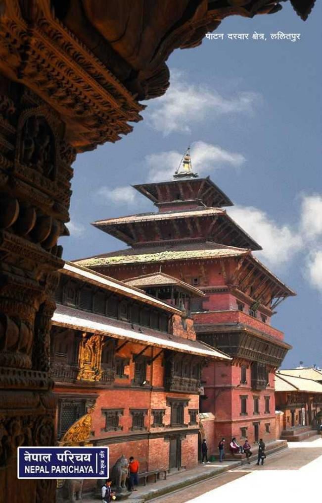